图形学 - 光和材质
Table of Contents
- 1. 现实与计算机中颜色
- 2. 光照模型
- 2.1. 最基础的光照模型 - Phong lighting model
- 2.2. OpenGL 的基础光照模型 - Blinn-Phong shading model
- 2.3. 基于物理的渲染 - PBR (Physically Based Rendering)
- 2.3.1. 微表面和宏表面 (Micro and Macro Surface)
- 2.3.2. 辐射度量(radiometric quantities): \(L_{i}(p, \omega_{i})|\omega_{i} \cdot n|\)
- 2.3.3. 双向反射分布函数(bidirectional reflective distribution function), 简称 BRDF: \(f_{r}(p, \omega_i, \omega_o)\)
- 2.3.4. 完整的反射率方程
- 2.3.5. 创作
PBR材质 (Authoring PBR Materials) - 2.3.6. GLSL 实现
- 3. 阴影
- 4. 附录
- 5. 完结心声
在图形学中,决定一个物体是否逼真(realism),除了投影方法外,另外一个重要因素就是光照(lighting)了.
包括这几个方面: 光(light)影(shadow)的表现,不同材质(material)的物体如何反射(reflects)光线,以及当光线照射到半透明物体时该如何弯曲(bend)/衍射(diffracted).
这篇笔记主要是关于光和材质方面的概念,在学习以后你会知道如何编写 Fragment Shader 来控制光照效果.
这篇笔记要求你阅读过我其它文章:
- 图形学-OpenGL坐标变换: 需要知道光照计算发生在哪个阶段; 阴影要求投影变换.
- Shader 编程自救指南: 需要插值是如何进行.
1. 现实与计算机中颜色
在物理学上,我们之所以能够看到一件物体是因为光照射到物体上,然后物体再反射光,最后被我们眼睛接收到.
光据有波动性(运动规率图类似 \(\cos\theta\) 函数图像),平时的可见光是由不同波长(wavelength,单位是米)的光按照不同比例混合而成,
不同的波长表现的颜色不一样,就是说一种波长对应一种颜色,而不同比例混合得到光的颜色看起来也不一样.著名的七色光(红,橙,黄,绿,青,蓝和紫,以长波长到短波长的顺序排列)就是从白光分解出来的.
先补充一下波长相关的概念(记不住也没关系的,了解一下就好):

在单位时间内波的传播速度叫做波速(wavespeed,单位是米/每秒),而光的波速也就是我们平时说的光速,波长就是指在一个周期内(单位是秒)能够传播的距离.
分别用 \(\mu\), \(\lambda\) 和 \(T\) 表示波速,波长以及周期,关系如下: \(\lambda = \mu T\).
也可以通过频率来描述波长,频率是每秒变化的次数,而周期是变化一次所需要的时间,也就是说计算出一秒可以有多少个周期就是频率了,所以频率 \(v = \frac{1}{T}\).
再结合上面的波长公式可以得到: \(\lambda = \frac{\mu}{v}\).
当光照射到物体上时,和物体表面颜色不一样的光都会被吸收掉,没有被吸收的光会被反射到我们的眼睛中,这个时候我们看到的光就是和物体的颜色一样,
(也不能说是颜色是完全一样的,因为现实要更加复杂,这里就先这么说了,后面会对写复杂的东西进行了解),还有一些自己发光的物体,就不对它们进行讨论.
总的来说,这是我们看到物体是什么颜色的原理,可以简单地认为: 同色相斥,异色吸引.
当然实际我们看到的颜色还受眼睛的视锥细胞(cone cells)影响,它们是一种感应器,人类有(S-cones, M-cones, L-cones)三类视锥细胞,分别接收感应三种不同程度波长的光: S(mall), M(edium), L(ong),不同物种数量可能不一样,比如皮皮虾的比人类多.
并且每个人的视锥细胞都不是一样的,因此我看到的颜色不一定是你眼中的那样,下面这图是视锥细胞在不同波长刺激的反应:

著名的三原色理论(RGB)就是这个图的简化版, \(RGB\) 分别表示红色(red), 绿色(green)和蓝色(blue)三项,这三种颜色不能通过其它颜色混合得到,反而它们可以混合得到其它颜色.
因为 \(SML\) 三种波长指的是一个范围,并非特指示某一种颜色,所以并不能 \(RGB\) 等同于 \(SML\),这点需要分清.
\(RGB\) 作为计算机常用的颜色模型,每一项都用固定大小空间进行储存,常见的 24 位深颜色,也就是每项用一个(8位)字节储存(因为一个颜色用24位储存,所以才叫 24 位深颜色);不常见的 16 位深颜色, \(R\) 和 \(B\) 各占 5 位, \(G\) 占 6 位.
当然还有其它位深的,下文统一采用 24 位深颜色讲解. 每项数值表示了对应颜色的光子被反射的量(强度),数值越低,人看到的颜色就越暗,也就是常说的颜色越深.
计算机就根据这个对颜色进行编码,颜色的编码是这样的 \(\left(R, G, B\right)\),或者用它们的16进制表示: \(R \times 16^{2} + G \times 16 + B = R_{0x}G_{0x}B_{0x}\), \(_{0x}\) 后缀表示该值的 16 进制模式.
在 24 位深下,每一项的取值范围是 \(\left[0, 2^{8} - 1\right]\), 当某一项超过这个范围,就把它固定为 0 或 255,这并非说光最亮就是这样,而是指显示设备的极限就是这样.
LED 三色屏就是根据这个来显示颜色的,每个像素由红绿蓝 个不同颜色的 LED 灯组成,三个灯分别根据强度进行发光,三种颜色的光混合起来就是想要看到的颜色.
因此 \(\left(0, 0, 0\right)\) 是最暗的颜色, 而 \(\left(255, 255, 255\right)\) 就是最亮的颜色.
可以通过比例来描述颜色,编码的每一项的取值范围在 \(\left[0,1\right]\),也就是 \(100\%\) 以内,比如 \(\left(1.0, 1.0, 1.0\right)\) 在 24 位深下表示 \(\left(255, 255, 255\right)\),方便在其它位深下进行计算, OpenGL 就是这样表示颜色的.
颜色之间可以进行加法,美术课上混合颜料和光的混合其实就是颜色加法的例子,比如颜料 \(\mathrm{Color}_{a} = \left(R_{a}, G_{a}, B_{a}\right)\) 和 \(\mathrm{Color}_{b} = \left(R_{b}, G_{b}, B_{b}\right)\) 混合得到颜色 \(\mathrm{Color}_{c} = \left(R_{a} + R_{b}, G_{a} + G_{b}, B_{a} + B_{b}\right)\),
要注意,我们在前面提到过,如果 \(\mathrm{Color}_{c}\) 的 \(RGB\) 任意一项超过能够显示的最大值,那么就把该项的值固定为最大值.
颜色之间也可以进行乘法,入射光被物体反射到眼睛上就是这么一个过程,因为 同色相斥,异色吸引, 物体颜色 \((R_{m}, G_{m}, B_{m})\) 中的每一项分别就表示对颜色为 \((R_{l}, G_{l}, B_{l})\) 的入射光每一项的反射程度.
也就是说反射到眼睛上的光的颜色为 \((R_{m}R_{l}, G_{m}G_{l}, B_{m}B_{l})\).
这两种运算例子会在之后的计算占很大的成分,尽可能要理解(起始也很好理解),记不住不要紧,后面讲计算前会复习一遍.
关于颜色的知识就先简单地说到这里,想更深入就需要去学习计算机色彩学了.
2. 光照模型
当人们说学习图形学光照时, 他们的真正意思是学习光照模型, 而光照模型是数学建模, 这会涉及大量数学内容.
光照模型并非公理, 我们可以在学习之后按照自己的想法对模型进行调整. 模型有很多种, 不同模型的照明效果也会不一样,
当然复杂程度也不一样. 接下来会从简单到复杂介绍三个光照模型.
想实现照明效果, 需要从 照明 与 被照明 这两角度进行了解: 当光照射到物体上时, 物体表面如何对光进行反射.
具体取决于物体表面材质(material)特点, 比如物体表面的颜色, 光泽度, 是平还是圆的等等.
2.1. 最基础的光照模型 - Phong lighting model
这一部分通过介绍最基础的光照模型来入门光照计算.
2.1.1. 反射
这部分的内容主要是围绕光源以及光的反射进行讨论,现实中光的反射方式有两种: 镜面反射(specular reflection)和漫反射(diffuse reflection),光如何反射是取决于反射面(也就是它照射的物体表面)的,如果反射面光滑,那么就是镜面反射;相反,反射面粗糙,那么就是漫反射.

可以看到在镜面反射中(左边),入射光(incoming ray)和反射光(reflected ray)的角度是一样的,观察者(viewer)实际上只能看到一个完美的反射光(因为反射角要等于入射角,符合这个条件的只有一个),这样的反射光一被叫做镜面反射高光(specular highlights).
当然现实中可不是只能看到一条完美的反射光,而是一束反射光(specular reflection cone),就像这样,

处于完美反射光角度上的所看到的反射光是最亮,越是偏离这个角度,看到的反射光越暗.反射光束的角度是由物体表面的光泽度(shininess)决定的,

这图上面的球体的光泽度从左到右体依次递增,白色区域就是镜面反射高光,光泽度越高,光束的角度越小,高光区域越小.
仔细回想一下自己是否在日常生活中见到过弯曲的表面上有一个白色光的圆,其实就是上面这图的实例,比如光照下的矿泉水瓶,红酒杯等等.
这种光叫做 镜面反射光(specular light).
而在理想的漫反射(右边)中,入射光被分散成多个不同方向并且能量大小相同的反射光,观察者可以在任何方位看到反射光,如果光是以平行射线的形式照射到表面,光源位置在无限远处就属于这种情况,比如室外的太阳光,那么表面就是被均匀照明(参考上面的图: Diffuse Reflection),
假设光是以非平行射线的形式照射到表面,比如物体附近的台灯(向各个方向照射的光源)或者光照射到表面弯曲的物体(曲面)都属于这种情况,表面并不是被均匀照明的,表面某个点上的照明程度取决于射线和表面的角度.
这种光叫做 漫反射光(diffuse light).
与弹球可以多次弹跳一样,光也可以被多次反射,在实际中,当光照射到物体表面时,部分光被吸收,部分光会被反射(除非物体完全不反光),然后这些被反射的光照射到别的物体上(比如,生物的眼睛,因此生物才能看到这个物体),一直循环这个过程直到再也没有多余的光能够被反射.
在这个过程中,被反射的光虽然也能照明其它物体,但并非最直接(也就是初始,没有经过"弹跳")的光源,这种间接光叫做 环境反射光(ambient light).
为了更好理解,举个现实例子:
一个房间里面打开唯一的灯,灯位于房间天花板的一个角落,这个时候大部份光都是可以确定直接来源,也就是灯;但是房间里面有一样物体的背面是没有直接被灯照到,但仍然可以看到它的背后,
这是因为光是会像弹球那样弹跳的,比如照射到墙壁弹跳一次,弹跳到另外一个东西上,不知道经过多少次弹跳最后弹到物体的背面,最后弹跳到眼睛上,就这样被看到了.
还有一个例子就是月亮,它的光就是从太阳借过来的,即使不开灯也能有月亮的光,这就是环境反射光的含义.
光在传播过程中被物体吸收从而减弱,这叫做衰减(attenuation),在现实中,光单纯地在空气中穿梭也会衰减,随着传播距离越远,光的强度越弱,想不衰减地则只有在真空中穿梭.
所以总结下来,按照反射的情况对光进行划分有三种光: 镜面反射光,漫反射光和环境光,它们三者的颜色之和就是光的颜色.
2.1.2. 材质
现实中每个物体对同样的光都有不同的反应,比如金属品和木制品,通常金属品的表面更加光滑,反光效果更好,
而木制品一般都比较粗糙,反光效果比较差. 甚至有些物体还会自己发光,比如汽车前灯,荧光棒等等,
这种自己发出的光叫做发射光(emissive), 物体对光的作出的反应取决于材质(material),可以理解为物体表面的特点,
比如颜色,还有在上面的 Phong lighting model 的例子中提到过的光泽度 \(\mathrm{shininess}\), 这些都是材质的属性.
2.1.3. 光照计算
在开始介绍光照模型前先思考一个问题, "光照计算" 具体实在计算什么呢?
光照计算就是为了得出物体在观察者眼中的颜色, 光照计算和阴影是没有关系的, 阴影的内容可以单独作为一个主题了.
图形学第一个提出的真实光照模型是 Phong 光照模型(Phong lighting model),
虽然它现在已经不是主流的照明方案, 但其核心思想依然是不少光照模型的基础,
比如 OpenGL 固定流水线(fixed function pipeline)中所使用的 Blinn-Phong shading model.
Phong 光照模型认为反射光分为三个部分: 环境反射光, 镜面反射光和漫反射光.

Figure 1: (图片来源于网络)
为了简单介绍这个模型是怎么计算的,假设现有一个发出 \(\mathrm{light\_color}\) 颜色的光源照射一个物体 \(o\) 上,
该物体颜色为 \(\mathrm{object\_color}\),现在要求计算出物体反射的光 \(\mathrm{result\_color}\).
其实总体思路就是要计算出光能够产生出多少 \(\mathrm{ambient}\), \(\mathrm{specular}\) 以及 \(\mathrm{diffuse}\),然后这三项经过物体的反射后得到的颜色分别是多少,
最后的总和就是物体的颜色 \(\mathrm{result\_color}\) 了.
有一点值得注意, 光照的计算可以发生在世界空间上, 也可以发生在视点空间上, 重点在与产于计算的参数必须位于同一个空间上, 否则计算就是有问题的.
不过, 这片笔记的的光照计算是假设在世界空间上的, 所以被照射的顶点, 光源位置, 法线向量以及相机位置全都是这个空间上的.
- ambient
假设光源产生了 \(\mathrm{ambient\_strength}\) 比例的 \(\mathrm{ambient}\), 那么 \(\mathrm{ambient} = \mathrm{ambient\_strength} \times \mathrm{light\_color}\).
这里还可以乘以一个系数 \(k\) 来调整光的强度: \(\mathrm{ambient} = \mathrm{ambient\_strength} \times \mathrm{light\_color} \times k\),
同样之后的 \(\mathrm{diffuse}\) 和 \(\mathrm{specular}\) 的计算也可以这做,并且每一项的系数都可以不同,
这个系数 \(k\) 是可以代表某种影响光的强度的因素,比如光线的衰减,这个系数就等在学习
OpenGL光照模型时深入了解,目前只要知道可以这么做足够了.
- diffuse
而 \(\mathrm{diffuse}\) 需要根据 照射点到光的方向 \(L\) 以及 物体表面方向 \(N\) 来确定结果,

Figure 2: 漫反射(图片来源于网络)
\(L\) 和 \(N\) 的夹角 \(\theta\) 的 \(cosine\) 值就是光源所产生的漫反射光的程度.
如果不理解为什么 \(\cos\theta\) 等于漫反射光的程度的话,可以复习一下向量点积的概念.
要注意一下 \(L\) 和 \(N\) 都必须是单位向量,因为 \(L \cdot N = |L||N|\cos\theta\),如果 \(L\) 和 \(N\) 都是单位向量的话 \(L \cdot N = \cos\theta\).
因此可以得到 \(\mathrm{diffuse} = max(L \cdot N, 0) \times \mathrm{light\_color}\),
要注意这里 \(max(L \cdot N, 0)\) 是为了避免 \(\theta\) 超过 90 度造成的负数,而超过 90 度就是没有照射到(看图就懂了),这个时候就应该取 0.
- specular
\(\mathrm{specular}\) 同样需要根据 \(L\) 和 \(N\) 来确定结果,此外还需要一个 从照射点到 viewer 的方向 \(V\),同样它们都是单位向量.
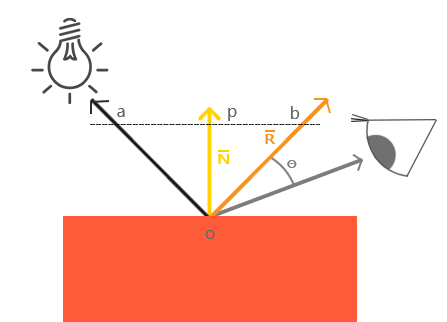
Figure 3: 镜面反射(图片来源于网络)
viewer的位置可以区别于相机单独设置,也可以直接设置成相机位置,当然最后的计算结果是不一样的.首先要计算出反射方向 \(R\),然后计算出 \(R\) 和 \(V\) 之间的夹角 \(\theta\) 的 \(cosine\) 值.
因为入射光线和反射光线的强度时一样的(认为是镜面反射),所以到
viewer的光线强度就很好得到了: \(max(R \cdot V, 0) \times \mathrm{light\_color}\),不要忘记还有光泽度 \(\mathrm{shininess}\) 这一因素,所以 \(\mathrm{specular} = max(R \cdot V, 0)^{\mathrm{shininess}} \times \mathrm{light\_color}\).
当
viewer的越是偏离反射光线, \(\mathrm{specular}\) 就越衰减, \(\mathrm{shininess}\) 控制了衰减程度, \(\mathrm{shininess}\) 越大,衰减越快.这里还有一个关键点就是如何求出反射向量(reflect vector) \(R\),通过上面的图可以进行推导,
要求出 \(R = \vec{ob}\), 现有 \(-L + R = \vec{ao} + \vec{ob} = \vec{ab}\),
其中 \(\vec{ap} = \vec{pb} = \vec{ao} + \vec{op}\),所以 \(\vec{ab} = 2\vec{ap} = 2(\vec{ao} + \vec{op})\).
因此, \(\vec{ob} = \vec{ab} - \vec{ao} = 2\vec{op} + \vec{ao}\).
这里的 \(\vec{op}\) 虽然与 \(N\) 的方向是一样的,但是它并非单位向量,所以还是要求出它的值的.
\(\vec{op}\) 实际就是 \(\vec{oa}\) 在 \(N\) 上的投影, 所以 \(\vec{oa} \cdot N\) 可以得出 \(\vec{op}\) 的模长,
又因为 \(\vec{op}\) 和 \(N\) 的方向是一样的,所以 \(\vec{op} = (\vec{oa} \cdot N) \times N\).
最后 \(\vec{ob} = 2(\vec{oa} \cdot N) \times N + \vec{ao}\),也就是 \(R = -L + 2(L \cdot N) \times N\).
- \(\mathrm{result\_color}\)
最后就是我们眼中的结果,也就是经过物体反射的光: \(\mathrm{result\_color} = (\mathrm{ambient} + \mathrm{diffuse} + \mathrm{specular}) \times \mathrm{object\_color}\).
目前介绍的模型还不完全的: 没有考虑到多光源, 光的衰减, 材质对计算的影响.
不过足以让你在直觉上有一个足够的理解, 而且马上就会在下一章介绍这些内容.
你可能还会在其它地方(比如,
OpenGL Programming Guide 8th)看到这样的计算:\(\mathrm{result\_color} = (\mathrm{ambient} + \mathrm{diffuse}) \times \mathrm{object\_color} + \mathrm{specular}\),
这个等式没有像上面那样计算镜面反射光, 或许你会好奇,这样的计算对吗,该用哪种算法?
事实上光线的计算方法是没有对错之分, 它们只是一种模型, 只要这个模型能实现你想要表达的艺术效果, 那么它就是"对"的.
比如之后还会有更加符合物理的
PBR模型, 它和Phong lighting model完全不一样, 但它也是"对"的.
2.2. OpenGL 的基础光照模型 - Blinn-Phong shading model
Blinn-Phong shading model 是 Phong lighting model 改进模型, 主要改进了镜面反射光的计算.
如果单纯只讲光照计算的话, 那么这个模型没什么好讲的, 这个模型比较特殊的一点在于 OpenGL 定义了一套 API 来支持这个模型,
也就是说该模型是 OpenGL 官方的光照模型, 接下来会根据 API 来描述这个模型.
我们会了解 OpenGL 是如何定义光和材质的, 并且使用它们计算出光照.
在进入主题前先问一个小问题,我们知道如何定义/设置顶点的颜色,但是图元的颜色呢(也就是顶点之间的像素的颜色)?
在
OpenGL中是先计算出图元(primitives,比如一个三角形)各个顶点的颜色,然后通过插值(interpolation)来获取图元内的点的颜色,这些要上色(shading)的点(包括顶点)叫做着色点(shading point).
如果
OpenGL没有启用光照,那么顶点就采用自身的颜色属性的值做为颜色(顶点本身也可以设置颜色);如果启用了光照,就通过计算获取顶点的颜色.
好的,那么现在开始进入主题.
2.2.1. 光在 OpenGL 中的定义
当光照射到物体表面时,物体材质的颜色就意味着是对光的反射率.
根据之前提到过的环境反射光,镜面反射光以及漫反射,材质的颜色分为环境反射色(ambient color),镜面反射色(specular color),以及漫反射色(diffuse color),此外还有一个没有对应的发射色(emissive color).
所以 OpenGL 的光照模型把光分为 4 种,从物体表面到眼睛中的颜色就是计算出4种光的混合结果:
\(\mathrm{result\_color} = \mathrm{emissive} + \mathrm{ambient} + \mathrm{diffuse} + \mathrm{specular}\).
除 \(\mathrm{emissive}\) 以外,每一项是光和材质共同的计算结果,这很好理解:因为光照射到物体,物体把部分光反射到眼睛上,反射了多少光就得看照射的光有多少以及材质的反射程度,而自发光是没有经过反射直接到眼睛的.
严格来说, \(\mathrm{emssive}\) 不是
Blinn-Phong shading model里面定义的.
OpenGL 允许有多个光源,并且拥有一个 全局环境反射光(global ambient light),它不属于任何一个光源,也就是就算所有光源都关闭了,全局环境反射光还在,光源的环境反射光以及全局环境反射光共同构成整个场景的环境反射光.
OpenGL 提供 glLight*(light, pname, value) 一类的函数来对光的参数 pname, 以下是对参数 pname 的说明:
| 属性 | 默认值 | 描述 |
|---|---|---|
GL_AMBIENT |
(0.0, 0.0, 0.0, 1.0) | 形式如(x, y, z, w),环境反射光的 RGBA 强度 |
GL_DIFFUSE |
(1.0, 1.0, 1.0, 1.0) | 形式如(x, y, z, w),漫反射光的 RGBA 强度 |
GL_SPECULAR |
(1.0, 1.0, 1.0, 1.0) | 形式如(x, y, z, w),漫反射光的 RGBA 强度 |
GL_POSITION |
(0.0, 0.0, 1.0, 0.0) | 形式如(x, y, z, w),如果 w 为0,那么光源位置就是在无限远处,因此认为光线之间是平行的,(x, y, z) 表示 指向光源的方向,这种光源叫做 定向光源(directional light),而默认值的意思就是光源往 \(z\) 轴的负方向,也就是 (0, 0, -1) 发出光线;若 w 不为0,那么光源位置位于场景附近,位于 (x, y, z),以光源为中心光向各个反向出发,这种光源叫做 位置光源(positional light), 偶尔也被叫做 点光源(point light). 另外,把这种光源屏蔽相当的一部分就能够达到聚光灯的效果 |
GL_SPOT_DIRECTION |
(0.0, 0.0, -1.0) | 形式如(x, y, z), 聚光灯的方向,聚光灯本质就是位置光源,所以一般来说 GL_POSITION 的 w 不应该为 0,不过 OpenGL 并没有限制这么做,但是采用定向光加聚光灯设置这种组合不一定是你想要的结果 |
GL_SPOT_EXPONENT |
0.0 | [0,128] 之间的整数或者浮点数,聚光灯的强度分布,如果为 0,那么聚光灯照射范围内的所有光的强度都一样,如果为正数,光线离照射中心越远,光的强度越弱,如果该值越大,那么衰减程度就越大,最后光的中心区域和外围区域差别越明显 |
GL_SPOT_CUTOFF |
180.0 | 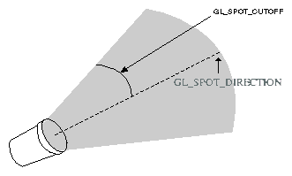, [0,90] 之间的整数或者浮点数以及特殊值 180.0,聚光灯光束角度的 \(\frac{1}{2}\),当为 180.0 的时候就表示没有屏蔽位置光源. |
GL_CONSTANT_ATTENUATION |
1.0 | 恒定衰减因素(factor),下文用 \(k_{c}\) 表示 |
GL_LINEAR_ATTENUATION |
0.0 | 线性衰减因素,下文用 \(k_{l}\) 表示 |
GL_QUADRATIC_ATTENUATION |
0.0 | 二次衰减因素,下文用 \(k_{q}\) 表示 |
看到上面这些属性基本上能对 OpenGL 里面的光有一个形象了,可以看出并没有直接设置光的颜色,
取而代之的是用了 \(\mathrm{GL\_AMBIENT}\), \(\mathrm{GL\_DIFFUSE}\) 和 \(\mathrm{GL\_SPECULAR}\) 来设置光的颜色,
这样在后续就不需要把光的每个部分求出来. 接下来就是一些其他的补充了.
首先是 光的衰减,对于定向光源来说,光的衰减计算是被禁掉的,因为光是随传播距离增加而减弱,而定向光源是位于无限远的,所以这是不能可能无限衰减的.
但是对于位置光源来说可以启用衰减计算,这里的材质发射光和全局环境反射光是不会衰减的,所以衰减的光就只有环境反射光,漫反射光以及镜面反射光.
另外, OpenGL 提供 glLightModel*(pname, param) 调整计算规则, 接下来是参数 pname 的说明:
| 属性 | 默认值 | 描述 |
|---|---|---|
GL_LIGHT_MODEL_AMBIENT |
(0.2, 0.2, 0.2, 1.0) | 全局环境光的 RGBA 强度 |
GL_LIGHT_MODEL_LOCAL_VIEWER |
0.0 or GL_FALSE |
决定镜面反射角度的计算方式, 角度由 被照射顶点的法线(normal), 从顶点到光源的方向(光源方向) 以及 从顶点到视点的方向(视点方向) 三个因素共同决定的. 当该参数的值为 0 或者 GL_FALSE 时表示顶点和视点之间的距离是无限大的, 这时视点方向被固定为 \(\left(\begin{array}{c}0, 0, 1\end{array}\right)\). 为 GL_TRUE 时则表示顶点和视点之间的距离属于可计算的范围内, 视点方向就是从顶点出发到视点的向量. |
GL_LIGHT_MODEL_TWO_SIDE |
0.0 or GL_FALSE |
计算物体正面(front face)和背面(back face)的光或者只计算正面的光,正面是指相对于视点(viewpoint)的前方,一般来说,物体所被我们看到的那一面都叫正面,反面的就叫背面,既然都看不到了,那么可以不对看不到的顶点进行渲染,这个叫面剔除(face culling),只要物体的面一旦被剔除,就可以看到物体的内表面(比如一个人站在房间门口外面,门就相当于被剔除的面),这样可以减少运算量.对于光照计算来说也是一样,可以设置该参数为 GL_FALSE 来表明不对背面进行光照计算.但如果要展示物体背后,那么就需要计算背面的光照情况了,首先正面的法线和背面的法线是相反的,此外. OpenGL 允许开发人员选择正面,关于 OpenGL 如何对正面和背面进行相关的计算,就留到以后再了解了. |
2.2.2. 材质在 OpenGL 中的定义
直接从 glMaterial*(face, pname, param) 切入主题,下面是它能够设置的材质属性参数 pname 说明:
| 属性 | 默认值 | 描述 |
|---|---|---|
GL_AMBIENT |
(0.2, 0.2, 0.2, 1.0) | 形式如(x, y, z, w),材质的环境反射色,环境反射色影响了物体的整体颜色,如果没有一个物体没有被任何光源直接照射,那么环境反射色就是最显眼的了,它受全局环境光以及其它光源构成的环境光影响,不受视点位置影响. |
GL_DIFFUSE |
(0.8, 0.8, 0.8, 1.0) | 形式如(x, y, z, w),材质的漫反射色,在4种颜色中,漫反射色最大程度上决定了你看到的物体是什么颜色,因为漫反射光是直接照射物体的,它受入射光以及入射光和顶点法线夹角的影响,(在夹角为0时,光被反射的程度最大,)不受视点的位置影响. |
GL_AMBIENT_AND_DIFFUSE |
形式如(x, y, z, w),在现实中,一般来说环境反射色和漫反射色是一样的,这个属性是为了方便同时设置两种颜色. | |
GL_SPECULAR |
(0.0, 0.0, 0.0, 1.0) | 形式如(x, y, z, w),材质的镜面反射色 |
GL_SHININESS |
0.0 | 取值范围为 [0.0, 128.0] 浮点整数,镜面反射指数,控制镜面反射所产生的高亮光圈的大小,光圈越小越集中,大小与该参数的关系如: size = cos(GL_SHININESS). |
GL_EMISSION |
(0.0, 0.0, 0.0, 1.0) | 形式如(x, y, z, w),现实中大部分物体都不会自己发光,除了光源本身外,而这个属性虽然让物体发光,但发光的物体不能作为光源照明其他物体,这个属性是用来模拟光源本身的(因为 OpenGL 里面光源不是一个物体,如果要模拟一个灯泡这种对象,就要给灯泡对象该属性,然后把光源位置和灯泡位置设置成一样) |
GL_COLOR_INDEXES |
(0, 1, 1) | 略 |
参数
face用来指定被设定对象是正面还是背面,还是两面都要设置, 值分别为:GL_FRONT,GL_BACK和GL_FRONT_AND_BACK.
2.2.3. 光线计算
这里的颜色模式用的是 RGBA 模式.
先介绍一下颜色的运算,假设有两个颜色: \(A = (R1, G1, B1, A1)\) 和 \(B = (R2, G2, B2, A2)\):
颜色加法: \(A + B = (R1+R2, G1+G2, B1+B2, A)\),加法表示颜色之间混合;
颜色乘法: \(A \times B = (R1R2, G1G2, B1B2, A)\),乘法表示颜色经过缩放,物体反射入射光就是这么一个例子;
其中 \(A\) 等于顶点的漫反射色 \(\mathrm{GL\_DIFFUSE}_{material}\) 的 alpha 值,所以计算的时候可以不用理会 \(A\) 的计算,下文也是这么做.
当光照射一个顶点时,顶点颜色的计算过程如下:
\(\mathrm{color}_{vector} = \mathrm{Material\_Emission} + \mathrm{Scaled\_Global\_Ambient\_Light} + \mathrm{Contributions\_From\_Light\_Sources}\).
\(\mathrm{Material\_Emission}\) 就是材质的 \(\mathrm{GL\_EMISSION}\) 属性.
\(\mathrm{Scaled\_Global\_Ambient\_Light}\) 是指被材质反射过的全局环境光:
\(\mathrm{Scaled\_Global\_Ambient\_Light} = \mathrm{GL\_AMBIENT}_{material} \times \mathrm{GL\_LIGHT\_MODEL\_AMBIENT}\).
\(\mathrm{Contributions\_From\_Light\_Sources}\) 则是比较复杂,它指所有光源的总和.
一个光源由环境反射光,漫反射光以及镜面反射光共同构成(三项的和),另外还有两个因素需要考虑:
光有没有经过衰减,以及光源是否为聚光灯.
假设现有 n-1 个光源,把所有光源的构成全部加在一起,总的计算过程如下:
\(\mathrm{contribution} = \mathrm{attenuation\_factor} \times \mathrm{spotlight\_effect} \times (\mathrm{ambient} + \mathrm{diffuse} + \mathrm{specular})\)
\(\mathrm{Contributions\_From\_Light\_Sources} = \displaystyle\sum_{i=0}^{n-1}\mathrm{contribution}_{i}\).
\(\mathrm{attenuation\_factor}\) 就是在 Phong lighting model 提到过的系数 \(k\), 这里只是三项的系数都一样.
接下来分别对 \(\mathrm{contribution}\) 的每一项计算进行深入了解.
\(\mathrm{attenuation\_factor}\)
光线的衰减因素.
如果光源是位置光源,那么计算如下: \(\mathrm{attenuation\_factor} = \frac{1}{k_{c} + k_{l}d + k_{q}d^{2}}\),
其中,
\(d\) 是指 \(\mathrm{GL\_POSITION} = (X, Y, Z, 1)\) 的光源到顶点 \((x_{v}, y_{v}, z_{v}, 1)\) 的距离: \(d = \sqrt{(X - x_{v})^{2} + (Y - y_{v})^{2} + (Z - z_{v})^{2} + (1 - 1)^{2}}\),
\(k_{c} = \mathrm{GL\_CONSTANT\_ATTENUATION}\),
\(k_{l} = \mathrm{GL\_LINEAR\_ATTENUATION}\)
\(k_{q} = \mathrm{GL\_QUADRATIC\_ATTENUATION}\).
如果光源是定向光源,那么结果直接固定为1: \(\mathrm{attenuation\_factor} = 1\).
\(\mathrm{spotlight\_effect}\)
聚光灯效果.
分三种情况进行计算:
当光源不是聚光灯,也就是说 \(\mathrm{GL\_SPOT\_CUTOFF} = 180.0\) 时, \(\mathrm{spotlight\_effect} = 1\).
当光源是聚光灯,在这个前提下要分两种情况讨论: 顶点是否位于聚光灯的照射范围内,
判定是哪种情况其实很简单,做法就是计算出 从光源到顶点的直线 和 聚光灯的方向 \(\mathrm{GL\_SPOT\_DIRECTION}\) 之间的夹角是不是小于 \(\mathrm{GL\_SPOT\_CUTOFF}\).(如果不理解的话回去看 \(\mathrm{GL\_SPOT\_CUTOFF}\) 参数的配图).
假设有顶点 \(v = (x_{v}, y_{v}, z_{v})\), \(\mathrm{GL\_POSITION} = (x_{l}, y_{l}, z_{l}, 1)\) 的光源,
先计算出光源到顶点的单位向量 \(\vec{n} = \frac{v - \mathrm{GL\_POSITION}}{|v - \mathrm{GL\_POSITION}|} = \frac{(x_{v} - x_{l}, y_{v} - y_{l}, z_{v} - z_{l})}{\sqrt{(x_{v} - x_{l})^{2} + (y_{v} - y_{l})^{2} + (z_{v} - z_{l})^{2}}}\),
然后通过 \(\vec{n} \cdot \mathrm{GL\_SPOT\_DIRECTION} = |\vec{n}||\mathrm{GL\_SPOT\_DIRECTION}|\cos\theta\) 来求出夹角的 \(cosine\) 值.
如果 \(\mathrm{GL\_SPOT\_DIRECTION}\) 是单位向量的话, \(\vec{n} \cdot \mathrm{GL\_SPOT\_DIRECTION} = \cos\theta\).
(实际上方向也的确是用单位向量表示,后面就不赘述了,凡是方向统一暗示单位向量).
因为 \(\mathrm{GL\_SPOT\_DIRECTION}\) 的取值可能是 \([0.0, 90.0]\) 以及 \(180.0\),不考虑 \(180.0\) 的话,
整个计算结果应该是 \(max(\vec{n} \cdot \mathrm{GL\_SPOT\_DIRECTION}, 0)\), 如果这个结果比 \(\mathrm{GL\_SPOT\_CUTOFF}\) 的 \(cosine\) 值要大,
根据 \(cosine\) 函数的性质可以得出顶点在聚光灯的照射范围内, 否则顶点就在照射范围内.
如果 顶点不在聚光灯照射范围内,那么 \(\mathrm{spotlight\_effect} = 0\);
如果 顶点在聚光灯照射范围内,那么 \(\mathrm{spotlight\_effect} = max(\vec{n} \cdot \mathrm{GL\_SPOT\_DIRECTION}, 0)^{\mathrm{GL\_SPOT\_EXPONENT}}\).
\(\mathrm{ambient}\)
就只是简单的环境光经过物体反射得到的环境反射色: \(\mathrm{ambient} = \mathrm{GL\_AMBIENT}_{\mathrm{light}} \times \mathrm{GL\_AMBIENT}_{\mathrm{material}}\).
\(\mathrm{diffuse}\)
漫反射光照射到物体表面得到的漫反射色.
这需要计算光是否直接照射到顶点,这个计算过程还是很好理解的,只要 指向光源方向 和 顶点的法线,就可以断定光是直接照射到顶点上,这是亮度最大,越偏离这个方向亮度就越小.
整个漫反射色的计算过程很好理解的,先假设目前有 \(\mathrm{GL\_POSITION} = (x_{l}, y_{l}, z_{l}, w)\) 的光源,以及被照射的顶点 \(v = (x_{v}, y_{v}, z_{v})\),顶点的法线为 \(N = (x_{n}, y_{n}, z_{n})\).
先计算出指向光源的方向 \(L\).
如果是定向光源(\(w = 0\)),那么 \(L = (x_{l}, y_{l}, z_{l})\);
如果是位置光源(\(w \neq 0\)),那么指向光源的方向就是 从顶点到光源的方向,那么 \(L = \frac{\mathrm{GL\_POSITION} - v}{|\mathrm{GL\_POSITION} - v|} = \frac{(x_{l} - x_{v}, y_{l} - y_{v}, z_{l} - z_{v})}{|(x_{l} - x_{v}, y_{l} - y_{v}, z_{l} - z_{v}|}\).
一旦计算出 \(L\) 以后,就进而可以得出 \(L\) 和 \(N\) 夹角 \(\theta\) 的 \(cosine\) 值了: \(\cos\theta = \frac{L \cdot N}{|L||N|}\), 这个值也表示了 \(L\) 和 \(N\) 不一致的时顶点接收到入射光的强度系数.
如果 \(L \cdot N < 0\),也就是说光源位于物体表面的"错误"面,也就是光没有照射到顶点 \(v\) 上,可以通过 \(max(L \cdot N, 0)\) 来纠正错误为 0.
最后整个计算过程就是 \(\mathrm{diffuse} = max(L \cdot N, 0) \times \mathrm{GL\_DIFFUSE}_{\mathrm{light}} \times \mathrm{GL\_DIFFUSE}_{\mathrm{material}}\).
整个计算思路和
Phong lighting model的那个例子一模一样,只是这里考虑了材质以及光的类型这两个因素.\(\mathrm{specular}\)
镜面反射光照射到物体表面得到的镜面反射色.
这一个步计算就是
Blinn-Phong shading model和Phong lighting model的差别了,之所以有这个新的模型那必然是Phong lighting model存在一些限制的.先来假设一些变量来更好的做说明,设有和 \(\mathrm{diffuse}\) 里面一样的光源,顶点以及顶点的法线,光源同样分定向和位置光源两种情况进行讨论, \(L\) 和 \(N\) 的具体计算过程就不赘述了,
另外多设一个反射向量 \(R\), 以及相机位置 \(v_{\mathrm{camera}} = (x_{\mathrm{camera}}, y_{\mathrm{camera}}, z_{\mathrm{camera}})\), 还需要一个从顶点 \((x_{v}, y_{v}, z_{v})\) 到
viewer的方向 \(V\),最后再提醒一次,这些向量都是单位向量,否则不能保证计算结果的正确性.
不过 \(V\) 需要分情况进行讨论:
如果 \(\mathrm{GL\_LIGHT\_MODEL\_LOCAL} = \mathrm{GL\_TRUE}\), 那 \(V = v_{\mathrm{camera}} - v = (x_{\mathrm{camera}} - x_{v}, y_{\mathrm{camera}} - y_{v}, z_{\mathrm{camera}} - z_{v})\); 否则, \(V = (0, 0, 1)\).
Phong lighting model存在的限制就是 \(R\) 和 \(V\) 之间的角度不能超过 90 度,对于 \(\mathrm{diffuse}\) 来说, \(L\) 和 \(N\) 是不能超过 90 度的,但是对于 \(\mathrm{specular}\) 来说, \(R\) 和 \(V\) 是可以超过 90 度的,

Figure 4: 镜面反射2(图片来源于网络)
根据
Phong lighting model的计算方法,如果 \(R\) 和 \(V\) 的夹角超过 90 度,那么 \(\mathrm{specular}\) 的结果就是 0,也就是说在 90 度的位置附近会看到一条明显的光暗分界线,这导致看起来不那么真实.James F. Blinn在 1977 年提出了一个 \(\mathrm{specular}\) 计算方法: 不依赖反射向量,利用半角向量 \(H\) (halfway vector)进行角度的计算,半角向量就是 \(L\) 和 \(V\) 夹角的 \(\frac{1}{2}\) 的那个方向,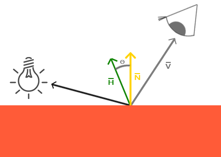
Figure 5: 半角向量(图片来源于网络)
只要把 \(L\) 或者 \(V\) 平移一下就可以发现 \(H = \frac{L + V}{|L + V|}\), 然后把原本计算 \(R \cdot V\) 改为计算 \(H \cdot N\).
最终的计算结果和
Phong lighting model的 \(\mathrm{specualr}\) 会稍微不一样,但依然是合理的,当 \(V\) 正好等于 \(R\),半角向量也正好等于 \(N\),这对应了 \(V\) 和 \(R\) 一致时亮度最高,也符合了 \(V\) 越时靠近 \(R\),亮度越高.所以 \(\mathrm{specular} = max(H \cdot N, 0)^{\mathrm{GL\_SHININESS}} \times \mathrm{GL\_SPECULAR}_{\mathrm{light}} \times \mathrm{GL\_SPECULAR}_{\mathrm{material}}\).
2.3. 基于物理的渲染 - PBR (Physically Based Rendering)
这个章节大部分内容涉及到了微积分和概率论的知识, 理解难度比之前的内容大一点.
原本想把里面的一些公式的推导整理进来, 但是这会造成篇幅过长.
因此这一章只会着重介绍相关函数的作用和性质, 把推导会整理在附录中.
PBR 是目前主流的光照模型, 如果想开发游戏, 那么 PBR 是避不开的.
2.3.1. 微表面和宏表面 (Micro and Macro Surface)
在 3D 建模中, 宏表面是实际存在的, 由顶点构成, 宏表面的法线由顶点法线决定;
微表面只在理论层面上存在, 由多个微平面(microfacets)构成, 这些微平面的法线是杂乱无章的, 因此, 只有一部分微平面才能反射光线.

Figure 6: 微表面和宏表面, \(n\) 是宏表面的法线, \(m\) 是微表面的法线
在图形学中, 对于几何体外观的建模, 总会假设一定的建模尺度和观察尺度:
- 宏观尺度 (Macroscale): 通过三角形网格(mesh)对几何体外观进行建模, 由顶点法线(Vertex Normal)给每个顶点提供法线信息.
- 中尺度 (Mesoscale): 通过纹理(贴图)对几何外观进行建模, 由法线贴图(Normal Map)给每个像素提供法线信息.
- 微观尺度 (Microscale): 通过
BRDF为几何外观进行建模,BRDF会使用一个微表面的法线分布函数NDF(Normal Distribution Function), 配合粗糙度贴图(Roughness Map)统计出一个宏表面上有多少微平面可以反射光线, 给每个亚像素(subpixel)提供法线.
亚像素
在数字成像领域，由于物理上已经无法在相邻的物理像素之间增加更多实际的感光单元，因此, 在软件上通过插值算法引入虚拟像素以在图像中提高测量的精度, 这些虚拟像素就是亚像素.
比如在下面的图中, 1 个方点就是 1 个物理像素, 1 个圆点就是 1 个亚像素.
软件上的 1 个像素是如下图那般由 4 个物理像素(1,2,3,4)构成的.
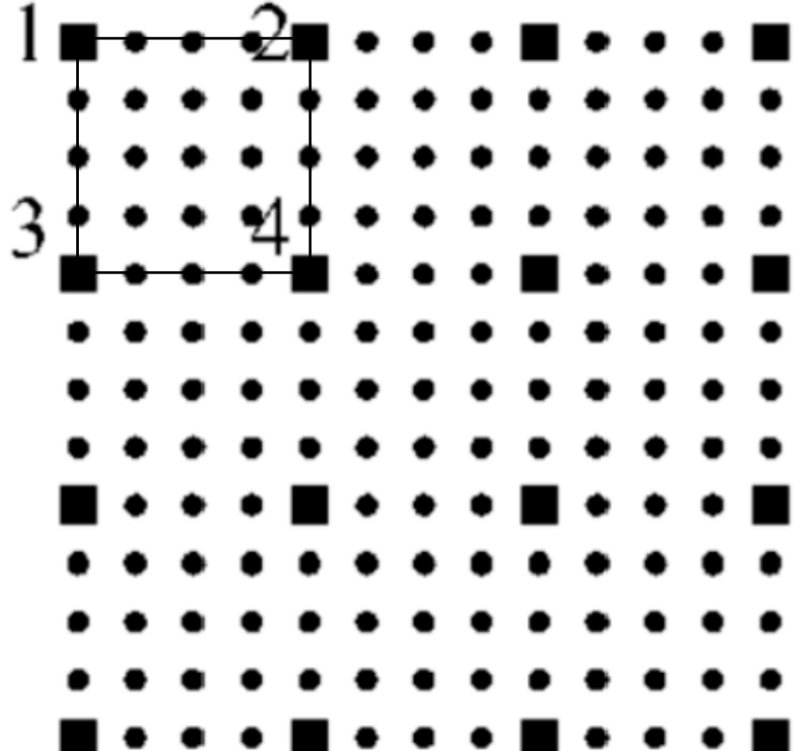
Figure 7: 亚像素
目前图形学中大多数微观尺度的结构都是高度场(heightfields), 所谓高度场就是所有亚像素点的深度信息的集合.
我们这里讨论的微表面就是一个高度场, 高度场结构的微表面有一个特征: 微平面的法线 \(m\) 不能向下.
接下来就是分部地解析反射率方程 (The reflectance equation): \(L_{o}(p, \omega_{o}) = \int_{\Omega}f_{r}(p, \omega_{i}, \omega_{o})L_{i}(p, \omega_{i})|w_{i} \cdot n|d\omega_{i}\).
2.3.2. 辐射度量(radiometric quantities): \(L_{i}(p, \omega_{i})|\omega_{i} \cdot n|\)
- 能量 (energy)
光源发射出光子, 光子的能量(焦耳, joules): \(Q = \frac{hc}{\lambda}\),
普朗克常量(Planck's Constant) \(h \approx 6.626 \times 10^{−34}\ \mathrm{m^{2}\ kg/s}\),
光速 \(c = 299472458 \mathrm{m/s}\),
光子的波长 \(\lambda\).
当然, 我们会用颜色代表光的能量.
- 通量 (flux)
能量测量可以发生在一段时间内, 比如说计算一个物体在接受光照一段时间后所受到的所有能量是多少.
辐射通量(radiant flux)或者功率(power)是指在单位时间内物体接受到的能量总量, 单位是
焦耳/秒(joules/second, J/s), 或者瓦特(watts, W).\(\Phi = \lim\limits_{\Delta t \to 0}\frac{\Delta Q}{\Delta t} = \frac{dQ}{dt}\)
假设有一个光源在一小时内发射了 \(Q = 200000\mathrm{J}\) 的能量, 那么它的辐射通量为 \(\Phi = \frac{200000\mathrm{J}}{3600\mathrm{s}} \approx 55.6\mathrm{W}\).
把通量的计算看作是一个关于时间 \(t\) 的函数 \(\Phi(t)\), 根据微积分第一基本定理, 可以在一个时间范围内 \([t_{0}, t_{1}]\) 对 \(\Phi(t)\) 进行积分, 算出共接受了多少能量:
\(Q = \int_{t_{0}}^{t_{1}}\Phi(t)dt\)
- 辐射度 (Irradiance)
也称辐射通量密度, 是指单位面积 \(A\) 内接受的功率是多少: \(E = \frac{\Phi}{A}\).
单位是 \(\mathrm{W/m^{2}}\).
Lambert's Law:
Irradiance arriving at a surface varies according to the cosine of the angle of incidence of illumination, since illumination is over a larger area at larger incident angles.
在表面上的辐射度会根据入射照明的角度的余弦值改变而发生改变, 因为照明区域会随着入射角的增大而增大.
假设有一个点处于球体上, 它的球体坐标系为 \((r, \theta, \varphi)\), 根据该定律的说法就是只有 \(\theta\) 会影响照明区域的大小.
围绕由法线定义的旋转轴对称(rationally symmetrical)叫做各向同性(isotropic), 否则就是各向异性(anisotropic).

Figure 8: 球体坐标系
整个半径为 \(r\) 球体的辐射度是: \(E_{\mathrm{sphere}} = \frac{\Phi}{4 \pi r^{2}}\).
把 \(E\) 定义成是一个函数, 计算 \(p\) 点的辐射度: \(E(p) = \lim\limits_{\Delta A \to 0}\frac{\Delta \Phi (p)}{\Delta A}\), 其中 \(\Delta A\) 是 \(p\) 点的辐射区域面积.
可以对辐射度进行积分算出照射面的功率: \(\Phi = \int_{A}E(p)dA\).
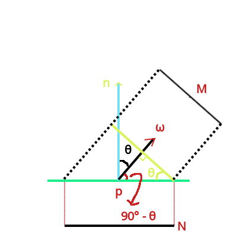
Figure 9: 平面 N 和 平面 M 之间的投影关系
根据三角函数关系, 可以得到 \(\frac{M}{N} = \cos\theta = \frac{\omega \cdot n}{|\omega||n|}\), 因为 \(\omega\) 和 \(n\) 都是单位向量, 所以 \(|\omega| = |n| = 1\).
所以平面 \(N\) 的辐射度为 \(E_{N} = \frac{\Phi}{N} = \frac{\Phi \cos\theta}{M} = E_{M} \times \cos\theta\).
- 辐射强度(Intensity)
辐射强度是描述每一个立体角(
solid angle)受到的辐射通量 \(\Phi\) 是多少, 单位是 \(\mathrm{W/sr}\), 用 \(I\) 表示: \(I(\omega) = \lim\limits_{\Delta \omega \to 0}\frac{\Delta \phi}{\Delta \omega} = \frac{d\phi}{d\omega}\).可以对强度进行积分反求出辐射通量 \(\Phi = \int_{\Omega}I(\omega)d\omega\).
立体角是拓展自平面角(
planar angle)的概念.1 立体角大小是指在球面上所截取的面积等于以球半径为边长的平方, 单位为球面度 \(\mathrm{sr}\).

Figure 10: \(1\ \mathrm{sr}\)
半径为 \(r\) 的球体表面积公式: \(4 \pi r^{2}\), 其球面度为 \(\frac{4 \pi r^{2}}{r^{2}} = 4 \pi\).
半球体表面积(不包含底部): \(\frac{4 \pi r^{2}}{2}\), 其球面度为 \(2 \pi\).
- 辐射 (Radiance)
辐射 \(L\) 是指在某个点上每微元面积(differental area)接受到多少微元辐射通量(differental flux), 这个度量与辐射强度 \(I\) 类似,
让 \(L\) 定义为位于 \(p\) 点上, 面积为 \(dA\) 且面向 \(n\) 的平面在 \(\omega\) 光线方向上每 \(d{\omega}\) 立体角每单位投影面积 \(dA^{\perp}\) 上受到/发射了多少辐射通量:
\(L(p, \omega) = \lim\limits_{\Delta \omega \to 0}\lim\limits_{\Delta A^{\perp} \to 0} \frac{\Delta \Phi}{\Delta \omega \Delta A^{\perp}} = \lim\limits_{\Delta \omega \to 0}\frac{\Delta E_{\omega}(p)}{\Delta \omega} = \frac{dE_{\omega}(p)}{d\omega}\).
这里直接方向向量 \(\omega\) 的微元 \(d\omega\) 表示为立体角, 其背后的依据是把方向向量 \((x, y, z)\) 转换成以 \((x_{0}, y_{0}, z_{0})\) 为球心的球体坐标系后再计算微元:
- 球体半径 \(r = \sqrt{(x - x_{0})^{2} + (y - y_{0})^{2} + (z - z_{0})^{2}}\), 这里以单位球体为研究对象, 因此 \(r = 1\).
- 极角 \(\theta = \arccos(\frac{z - z_{0}}{r})\).
- 方位角 \(\phi = \arctan(\frac{y - y_{0}}{x - x_{0}})\).
- 因此, 方向向量的变化量就转化成极角和方位角的变化量: \(d\theta\) 和 \(d\phi\).

Figure 11: 微元立体角 \(d\omega\)
严格来讲, 不应该用 \(d\omega\) 来表示立体角度的, 这里有符号滥用的嫌疑了, 读者很容易搞混.
不过, 有一些材料就是会用方向向量的微元来表示立体角的, 所以才强调一番.
用 \(E_{\omega}\) 表示垂直于 \(\omega\) 的辐射度, 用 \(dA^{\perp}\) 表示 \(dA\) 在 \(\omega\) 方向上的假想垂直平面的投影面积, \(dA\) 是 \(p\) 点所占的平面面积,
\(\theta\) 是 \(\omega\) 和 平面 \(A\) 的面法线 \(n\) 的夹角, 并且 \(\omega\) 和 \(n\) 是单位向量.

Figure 12: 辐射投影关系
所以 \(E_{\omega} = \frac{\Phi}{A^{\perp}} = \frac{\Phi}{A \times \omega \cdot n} = \frac{\Phi}{A \times \cos\theta}\), 最终 \(L(p, \omega) = \frac{d}{d \omega}(\frac{d\Phi}{d(A \cos\theta)}) = \frac{d^{2}\Phi}{d{\omega}d(A \cos\theta)} = \frac{d^{2}\Phi}{\cos\theta d{\omega}dA}\).
也可以通过偏微分进行表示: \(L(p, \omega) = \frac{\partial}{\partial \omega}(\frac{\partial\Phi}{\partial(A \cos\theta)}) = \frac{\partial^{2}\Phi}{\partial{\omega}\partial(A \cos\theta)}\).
事实上我们并不太关心 \(A\) 具体是多少, 只关心投影前后的比例关系, 所以:
\(L = \frac{d^{2}\Phi}{d{\omega}d(\cos\theta)} = \frac{d^{2}\Phi}{d{\omega}d(\omega \cdot n)} \Rightarrow L_{A} = L \times \cos\theta = L \times (\omega \cdot n)\).
同样, 根据微积分第一基本定理, 可以计算出以平面 \(A\) 上的 \(p\) 点作为半球体中心(其球面度为 \(\Omega = 2 \pi\))所受到的辐射度:
\(E(p, n) = \int_{\Omega}L(p, \omega)|\omega \cdot n|d\omega = \int_{\Omega}L(p, \omega)|\cos\theta|d\omega\).
2.3.3. 双向反射分布函数(bidirectional reflective distribution function), 简称 BRDF: \(f_{r}(p, \omega_i, \omega_o)\)
能量守恒(Energy Conservation): 出射光的能量不能超过入射光的能量, 排除自发光的表面光.
为了遵守能量守恒, 需要对镜面反射光(specular light)和漫反射光(diffuse)进行明确的区分,
光在击中表面时会分成折射光(refraction)和反射光(reflection)两部分:
反射光是没有被表面吸收并且被直接反射的光, 也就是熟知的镜面反射光;
折射光是进入表面并且被吸收的光, 就是我们熟知道的漫反射光.
所谓的被吸收其实就是光在进入表面后, 与材质的粒子发生多次碰撞后全部转化成热能,
然而有一部分光会在全部转化成热能之前以随机的方向逃离出表面,
这一部分光被称为散射光(scattered light), 在逃出表面后成为漫反射光的一部分.
不过在目前介绍的 PBR 模型中会假设折射光被全部吸收, 忽视散射光在离开表面后的远处消失的效果,
不过有一项叫做次表面散射(subsurface scattering)的着色技术可以实现这些效果, 但伴随而来的是性能代价.
因为遵守能量守恒, 所以满足该关系: \(k_{\mathrm{specular}} + k_{\mathrm{diffuse}} = 1.0\),
其中 \(k_{\mathrm{specular}}\) 和 \(k_{\mathrm{diffuse}}\) 分别是镜面反射光占总能量的比例, 以及漫反射光占总能量的比例.
金属表面(metallic surface)只有反射光, 没有折射光, 换句话就是金属表面只显示镜面反射色, 不显示漫反射色;
非金属表面(non-metallic surface), 或者叫电解质(dielectric)
BRDF 是一个以入射光方向 \(\omega_{i}\), 出射光方向 \(\omega_{o}\), 宏表面法线 \(n\) 以及表面粗糙度 \(\alpha\) 为参数的函数,
计算出每个光线 \(\omega_{i}\) 在特定材质的不透明表面光上产生多少反射光.
如果一个表面和镜子一样光滑, 那么 BRDF 函数就会返回 \(0.0\) 来表示入射光的角度和出射光的角度是一样的,
BRDF 并不是一个具体的函数, 可以有很多种选择, 最早的 BRDF 是由 Fred Nicodemus 在 1965 年提出: \(f_r(\omega_i, \omega_o) = \frac{d L_o (\omega_o)}{d E_i(\omega_i)} = \frac{d L_o(\omega_o)}{L_i(\omega_i) \cos\theta_i d\omega_i}\).
这个公式之所以定义为辐射 \(L_o\) 和辐射度 \(E_i\) 之比, 而不是 \(L_o\) 和 \(L_i\) 或者 \(E_o\) 与 \(E_i\) 之比,
是因为在入射时需要考虑照射面积, 在反射时需要考虑每立体角的辐射通量, 反射角度以及投影面积.
目前业界主流的 PBR 渲染管线所使用的 BRDF 是 Cook-Torrance BRDF: \(f_{r} = k_{\mathrm{diffuse}}f_{\mathrm{lambert}} + k_{\mathrm{specular}}f_{\mathrm{cook-torrance}}\).
\(f_{\mathrm{lambert}} = \frac{c}{\pi}\), \(c\) 是表面颜色(surface color) 或者反射率(albedo), 就像 \(\mathrm{GL\_DIFFUSE}_{\mathrm{material}}\) 一样决定了反射多少漫反射光.
\(f_{\mathrm{cook-torrance}} = \frac{DFG}{4(\omega_{o} \cdot n)(\omega_{i} \cdot n)}\) 计算反射光, \(f_{\mathrm{cook-torrance}}\) 的定义源于最早的 BRDF, 其中 \(D\) 是法线分布函数, \(G\) 是几何函数, \(F\) 是菲涅尔方程.
接下来分别学习这 3 个部分, 并在最后介绍 \(f_{\mathrm{cook-torrance}}\) 是怎么推导出来的.
另外, 为了方便码字, 在解析 BRDF 这部分的内容里面会采用 \(v\) 代表 \(\omega_{o}\), \(l\) 代表 \(\omega_{i}\).
还有这部分的参数比较多, 时间久了可能会忘记这些参数的含义, 为了方便之后快速查询, 这里给出它们的汇总:
\(l\) 是入射光方向;
\(v\) 是出射光方向;
\(m\) 是微平面的法线向量, 使用 \(v\) 和 \(l\) 的半角向量 \(h\) 作为微平面的法线向量, 也就是 \(m = h\);
\(n\) 是宏表面的法线向量;
\(\alpha\) 是微平面的粗糙度
- 法线分布函数 (
Normal Distribution Function, NDF): \(D(m, n, \alpha)\)
这里有个关于翻译上的讨论, 正态分布函数的英文也叫
Normal Distribution Function.但是这里的
Normal应该是翻译成法线, 理由是NDF的全定义域积分并不等于 1,正态分布函数作为一个概率密度函数(
probability density function), 它的全定义域积分是 1.因此,
NDF并非正态分布函数. 但是NDF和概率密度函数有着密切联系, 人们用概率密度函数来对连续表面的法线分布进行建模.事实上, 不止法线分布, 表面很多其它方面的数学建模都是通过概率论来完成的.
参考资料:
\(DFG\) 中的 \(D\) 就是一个
NDF,NDF并不是一个具体的函数, 是一类函数的统称, 有很多种选择.它描述的是: 在以 \(m\) 为中心的立体角 \(d\omega_{m}\) 和无穷小宏表面区域 \(dA\) 内, 面向 \(m\) 的微平面面积 \(dA_m\) 的密度: \(D(m) = \frac{dA_m}{d\omega_m dA}\), 单位是 \(1 / \mathrm{steradians}\).
简单点说, \(D(m)\) 越大, 面向 \(m\) 的微平面数量越多.
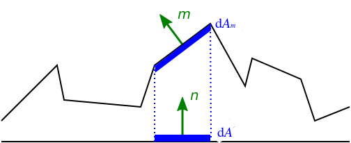
Figure 13: 微平面在宏表面上的投影, \(dA_{m}\) 是微平面总面积, \(dA\) 微平面在是宏表面上的投影
BRDF把入射光 \(l\) 和视线 \(v\) 两者共同决定的半角向量 \(h\) 定义为微平面的法线向量, 是因为 只有 \(m = h\) 才能让入射光 \(l\) 正确在视线 \(v\) 上进行反射, 从而被相机接收到, 而统计内容就是被看到的那部分.
Figure 14: 宏表面的半角向量作为微平面的法线向量
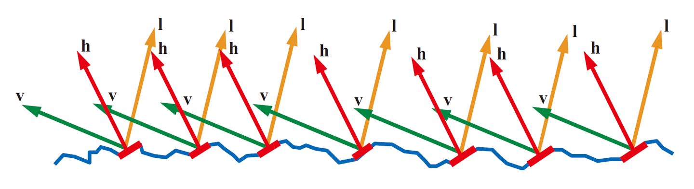
Figure 15: 所有符合 \(m = h\) 的微平面
\(D(m)\) 就 像 是概率密度函数一样, 对 \(D(m)\) 在整个球体上进行积分可以得出整个微表面的总面积 \(S = \int_{m \in \Theta}D(m)d\omega_{m}\) (\(\Theta\) 表示整个球体的球面度).
根据上图的投影关系: \(dA = (m \cdot n) \times dA_{m} \rightarrow A = \int_{m \in \Theta} (m \cdot n) dA_{m}\),
其中 \(0 \lt m \cdot n \le 1\), 可以得出微表面的总面积始终不小于宏表面总面积.
并且可以得出该关系: \(\int_{m \in \Theta}D(m)d\omega_{m} = \int_{m \in \Theta} \frac{dA_m}{d\omega_m dA} d\omega_m = \int_{m \in \Theta} \frac{1}{m \cdot n} \ge 1\);
可以发现 \(D(m)\) 并非概率密度函数, 因为它的总积分不为 1.
为此在对它进行积分时需要进行归一化: \(\int_{m \in \Theta}D(m)(m \cdot n)d\omega_{m} = \frac{1}{A}\int_{m \in \Theta} (m \cdot n)dA_{m} = 1\).
从微表面到宏表面的投影系数 \(m \cdot n\) 来看, \(D(m)\) 并非定义为微平面在球体立体角里的面积密度, 而是定义为微平面在 \(xy\) 宏表面上的投影面积密度.
一般来说, 微表面和宏表面两者在垂直于视线 \(v\) 的平面 \(P_{v^{\perp}}\) 上的投影是相等的:
\(\int_{m \in \Theta}D(m)(m \cdot v)d\omega_{m} = n \cdot v = \cos\theta_{o}\), 其中 \(\theta_{o}\) 是 \(n\) 和 \(v\) 之间的夹角.
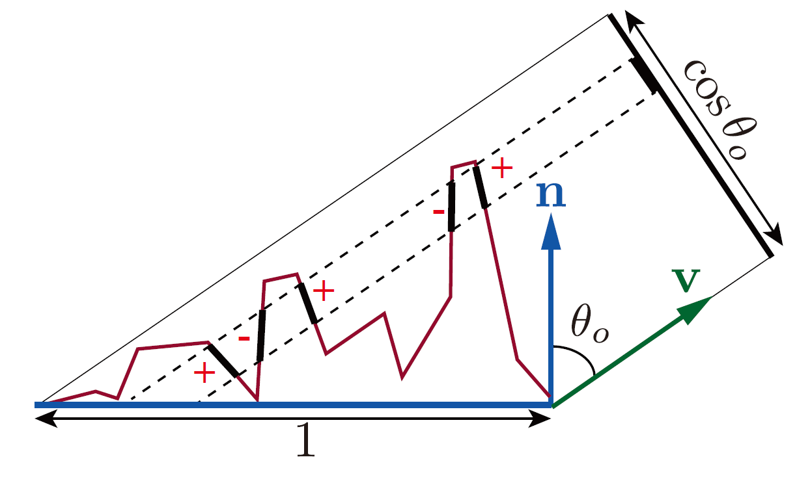
Figure 16: 微表面和宏表面在垂直于 \(v\) 的平面的投影
\(\int_{m \in \Theta}D(m)(m \cdot v)d\omega_{m}\) 是微表面在 \(P_{v^{\perp}}\) 上的投影, \(n \cdot v\) 是宏表面在 \(P_{v^{\perp}}\) 上的投影.
另外, 没有把上面积分公式中的点积(
dot product)限制在大于等于 0, 因为投影会产生正负抵消.当多个微平面的投影重叠是, 面向 \(-m\) 的微平面的投影抵消了面向 \(m\) 为平面的投影.
我们的目的是通过宏表面的信息和粗糙度来计算出全部符合条件的微平面的面积之和.
尽管存在许多投影重叠的微平面, 但对于最终渲染而言只需关心可见的微平面(未被遮挡的微平面), 也就是所有投影重叠的微平面中最接近相机的那一个.
同样, 可见微平面的在视线方向 \(v\) 上的投影面积和宏平面在视线方向 \(v\) 上的投影面积是一样的.
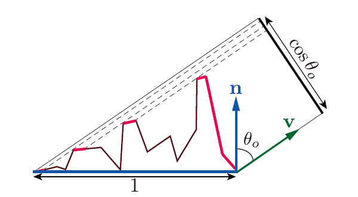
Figure 17: 可见微平面和宏表面在垂直于 \(v\) 的平面的投影
为此需要定义遮蔽函数(masking function) \(G_{1}\) 来描述所有沿着视线方向 \(v\) 的可见微平面的总面积 \(A_{m=v}\) (也就是红色部分) 与符合 \(m = h\) 的微平面的总面积 \(A_{m=h}\) 的比例: \(G_{1}(v, m) = \frac{A_{m=v}}{A_{m=h}}\).
\(\int_{m \in \Theta}G_{1}(v, m) D(m)(m \cdot v)^{+}d\omega_{m} = n \cdot v\), 其中 \((m \cdot v)^{+}\) 表示将 \(m \cdot v\) 限制为大于等于 0, 也就是在微平面背后的情况不进行计算.
\(G_{1}(v, m)D(m)\) 表示了可见微平面的法线分布, \(G_{1}(v, m)\) 就是后面要介绍的几何函数, 通过描述微平面的自遮蔽属性来对微表面轮廓进行建模.
\(D(m)\) 只能描述法线分布, 没法描述微表面轮廓, 几何函数就是用来补全这一块的空缺.
总结下来, 一个基于物理的微平面
NDF\(D(m)\) 得具备下基本性质:微平面法线密度始终为非负值:
\(0 \le D(m) \le \infty\)
微表面的总面积始终不小于宏表面的总面积:
\(\int_{m \in \Theta}D(m)d\omega_{m} \ge 1\)
在任何方向 \(v\) 上进行观察, 微表面的投影面积始终与宏表面的投影面积相同:
\(\int_{m \in \Theta}D(m)(m \cdot v)d\omega_{m} = n \cdot v\)
如果从宏表面的法线方向 \(n\) 进行观察(也就是在 \(n\) 的方向进行投影), 那么可以对 \(D(m)\) 的积分进行归一化:
\(\int_{m \in \Theta}D(m)(m \cdot n)d\omega_{m} = 1\)
为了方便操纵 \(D(m)\) 的分布, 人们通过加入粗糙度(
roughness) \(\alpha\) 作为影响因子, 因此, \(D(m)\) 可以改写成 \(D(m, \alpha)\) 形式.在具体选择一个
NDF时, 通常会通过两个方面去考量如何:是各向同性(
isotropic)的还是各向异性的(anisotropic)如果
NDF围绕由宏表面的面法线 \(n\) 定义的旋转轴对称, 那么该NDF就是各向同性的, 否则就是各向异性的.是否具备形状不变性(
shape invariance)形状不变性是指粗糙度 \(\alpha\) 决定的是对微平面的缩放, 如下图:
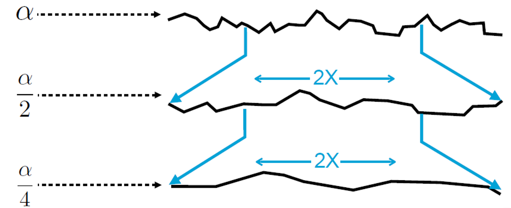
Figure 18: 粗糙度变小, 微平面数量的变少, 但微平面的面积变大, 微表面更平滑
具有形状不变性的
NDF都可以写这种形式: \(D(m, \alpha) = \frac{1}{\alpha^{2}(n \cdot m)^{4}} \times g(\frac{\sqrt{1 - (n \cdot m)^{2}}}{\alpha(n \cdot m)}) = \frac{1}{\alpha^{2} \cos^{4}\theta_{m}} \times g(\frac{\sqrt{1 - \cos^{2}\theta_{m}}}{\alpha \cos\theta_{m}})\),\(\theta_{m}\) 是 \(m\) 和宏表面的面法线 \(n\) 之间的夹角, \(g\) 是一元函数, 用来决定 \(D\) 的形状,
可以把 \(g(\frac{\sqrt{1 - \cos^{2}\theta_{m}}}{\alpha \cos\theta_{m}})\) 改写成 \(f(\frac{\tan\theta_{m}}{\alpha})\), 然后 \(D(m, \alpha)\) 可以改写成 \(D(\theta_{m}, \alpha) = \frac{1}{\alpha^{2}\cos^{4}\theta_{m}} \times f(\frac{\tan\theta_{m}}{\alpha})\).
具备形状不变性的
NDF可以推导出该NDF归一化的各向异性版本以及方便与推导出几何函数 \(G\) (后面会介绍几何函数).只要不成比例得拉伸表面就可以将各向同性的形状不变分布转换成各向异性分布, 这个特性要求理解斜率空间这个概念, 在附录中的为什么需要斜率空间会介绍表面变换和斜率空间变换的关系.

Figure 19: 图片来自 [Heitz 2014]
目前同时符合各向同性和形状不变性这两个条件的主流
NDF有两个:Beckmann Distribution和GGX (Trowbridge-Reitz) Distribution.
Figure 20: GGX VS Beckmann (图片来自 https://banbao991.github.io/2021/05/12/CG/YLQ-GAMES202/10/)
GGX Distribution比起Beckmann Distribution有更长的尾部, 也就是说在衰减到一定程度之后衰减速度变小, 导致长尾(long tail).
Figure 21: 更长的尾部一味着更明显的光晕
因为篇幅限制, 这里只给出
GGX Distribution的NDF定义:\(D(m = (x_{0}, y_{0}, z_{0}), n = (x_{1}, y_{1}, z_{1}), \alpha) = \frac{\alpha^{2} \chi^{+}(m \cdot n)}{\pi (m \cdot n)^{4} (\alpha^{2} - \frac{(m \cdot n)^{2} - 1}{(m \cdot n)^{2}})^{2}} = \frac{\alpha^{2}\chi^{+}(m \cdot n)}{\pi ((m \cdot n)^{2}(\alpha^{2} - 1) + 1)^{2}}\).
以下是它的
GLSL Shader实现:#define PI 3.1415926538 float D_GGX (float n_microfacet, float n_macrosurface, float roughness) { float alpha_2 = roughness * roughness; float cos_theta = dot(n_microfacet, n_macrosurface); float d = cos_theta * cos_theta * (alpha_2 - 1) + 1; return alpha_2 / (PI * d * d); }
关于
GGX NDF的推导可以看斜率空间中的T分布函数. - 几何函数 (
Geometry Functions): \(G(v, l, m)\)
几何函数是对微表面轮廓的建模, 具体做法是描述微平面之间的阴影和遮蔽属性, 函数的结果表示所有符合 \(m=h\) 的微平面中, 在入射 \(L\) 和反射 \(V\) 方向上同时可见的微平面总面积比例.
我们用 \(G\) 来表示几何函数, 几何函数有两种形式: \(G_{1}\) 和 \(G_{2}\).
\(G_{1}\) 在前面有介绍过, 这里介绍的含义会和前面的有些差别: 描述微平面在单个方向(光线方向 \(L\) 或视线方向 \(V\))上的可见比例.
因此, \(G_1\) 的值是一个标量, 并且 \(0 \le G_1 \le 1\).
在视线方向 \(V\) 上可见就叫做遮蔽函数(
masking function), 在光线方向 \(L\) 上可见叫做阴影函数(shadowing function).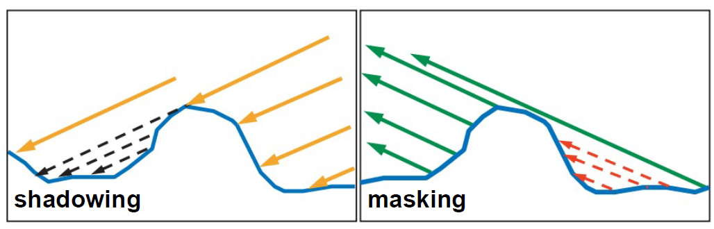
Figure 22: 阴影和遮蔽
实际上, 虽然阴影区并没有从 \(L\) 接收到任何直射光, 但它们有可能从附近接收到直射光区域中接收到间接反射的光, 只是微平面理论忽略了这些互相反射.
\(G_{2}\) 则是描述微平面在光照方向 \(L\) 和观察方向 \(V\) 上的可见比例, 被称为联合遮蔽阴影函数(
joint masking-shadowing function),在实践中, \(G_{2}\) 是由 \(G_{1}\) 推导而来, 它就是默认情况下的几何函数 \(G\).
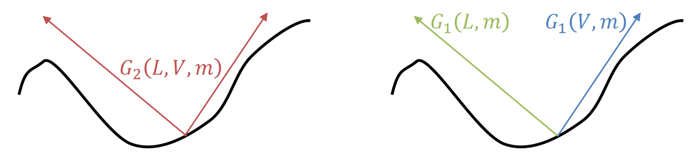
Figure 23: \(G_{2}\) 和 \(G_{1}\) 的关系
简单来说, 只要研究出 \(G_{1}\), 就可以推导出 \(G_{2}\), 在讨论
NDF时, 我们就拥有这一条关系:\(\int_{m \in \Theta}G_{1}(v, m) D(m)(m \cdot v)^{+}d\omega_{m} = n \cdot v\).
但单凭这一条关系并不能得出具体的 \(G_{1}\), 因为 \(G_{1}(v, m)\) 是二元函数, 仅固定视线方向 \(v\), \(m\) 是会存在无数种可能满足这一关系的.
\(m\) 作为微平面的法线, 它们的排列代表的是微表面轮廓(
microsurface profile), 因此要确定具体的 \(G_{1}\) 就得先确定微表面的轮廓.微表面轮廓的选择会对
BRDF的形状产生强烈影响, 如图所示.
Figure 24: 图片修改自 [Heitz 2014]: 相同的法线分布但不同的轮廓导致不同的
BRDF表面轮廓有好几种模型,
Heitz在[Heitz 2014]证明了只有两种模型基于物理:Smith遮蔽函数 (Smith masking function) 和V腔遮蔽函数 (V-cavity masking function), 也分别被称为Smith模型和V腔散射模型 (V-cavity scattering mode).首先是
Smith遮蔽函数可以通过以下图片进行表达:
Figure 25: 现实表面轮廓(左)和
Smith模型的表面轮廓(右) (图片来自[Heitz 2014])左图为具备距离相关性的真实世界连续微表面; 右图则是不具备距离相关性的
Smith微表面, 该模型的微平面之间甚至不连续.最后是
V腔散射模型, 该模型并非对微表面的散射进行建模, 而是单独计算微表面上的散射并把计算结果进行混合.
Figure 26:
V腔散射模型 (图片来自[Heitz 2014])微表面轮廓具备拉伸不变性 (
stretch invariance): 拉伸微表面轮廓就像拉伸一张图片, 在一个维度上乘以常数因子, 并不会改变微表面轮廓的拓扑结构, 在拉伸后, 遮挡的光线仍会被遮挡, 未遮挡的光线仍未被遮挡.当微表面轮廓中所涉及的全部斜率(微平面斜率和出/入射方向相关的斜率)同时缩放时, 遮蔽概率是不会发生改变的,
它们都是通过拉伸因子的倒数来缩放, 因此, 斜率分布的宽度也被反向拉伸因子拉伸.

Figure 27: 对微表面在一个维度上拉伸 2 倍, 所有斜率都被缩小 1 倍 (图片来自[Heitz 2014])
Heitz还证明了Smith遮蔽函数是唯一一个既遵守关系 \(\int_{m \in \Theta}G_{1}(v, m) D(m)(m \cdot v)^{+}d\omega_{m} = n \cdot v\), 又具备法线/遮蔽独立性的函数.这里法线/遮蔽独立性是指代表微平面斜率的随机变量和代表微平面高度的随机变量之间独立, 随机变量之间独立是概率论的概念.
在后面 \(G_1\) 推导 中可以再次看到这个概念, 届时相信你能够理解这个概念.
并且
Smith模型相比V腔散射模型更好地匹配真实世界的反射现象, 这就是业界更加青睐Smith模型的原因.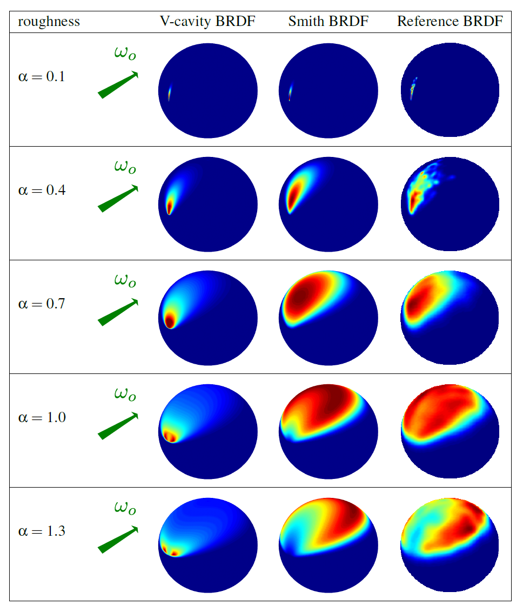
Figure 28:
V腔散射BRDFVSSmith BRDFVS参考现实效果的(Reference)BRDF(图片来自[Heitz 2014])现在让我们专注于
Smith模型, 首先Smith遮蔽函数 \(G_1\) 的形式为: \(G_1(v, m) = \chi^{+}(\frac{v \cdot m}{v \cdot n})\frac{1}{1 + \Lambda(v)}\), 其中:- \(\begin{equation*}\chi^{+}(x) = \begin{cases} 1, & x \gt 0 \\ 0, & x \le 0 \end{cases}\end{equation*}\),
\(\Lambda(v) = \frac{1}{\mu} \int_{\mu}^{\infty}(q - \mu)P_{2}(q)dq\)
\(\mu\) 是射线 \(v\) 的斜率, 其值为 \(\cot \theta_v\), \(\theta_v\) 是宏表面法线 \(n\) 与 \(v\) 之间的夹角;
\(q\) 是微平面的斜率, 其值为斜率空间上的分量, 因为是各向同性, 所以 \(q = \widetilde{x}_{m} = \widetilde{y}_{m} = - \frac{x_{m}}{z_{m}} = - \frac{y_{m}}{z_{m}}\).
所以该等式可以写成 \(\Lambda(v) = \frac{1}{\cot \theta_v} \int_{\cot\theta_v}^{\infty} (\widetilde{x}_{m} - \cot \theta_v)P_{2}(\widetilde{x}_{m})d\widetilde{x}_{m}\).
\(P_2\) 则是由 \(P_{22}\) (斜率空间上的概率密度函数) 推导出来: \(P_2(\widetilde{x}_m) = \int_{-\infty}^{\infty}P_{22}(\widetilde{x}_m, \widetilde{y}_m) d\widetilde{y}_m\).
因此, 完整形式为:
\(\begin{equation*} \begin{aligned} \Lambda(v) & = \frac{1}{\cot \theta_v} \int_{\cot\theta_v}^{\infty} (\widetilde{x}_{m} - \cot \theta_v) \left[ \int_{-\infty}^{\infty}P_{22}(\widetilde{x}_m, \widetilde{y}_m) d\widetilde{y}_m \right] d\widetilde{x}_{m} \\ & = \frac{1}{\cot \theta_v} \int_{\cot\theta_v}^{\infty} (\widetilde{x}_{m} - \cot \theta_v) d\widetilde{x}_{m} \int_{-\infty}^{\infty}P_{22}(\widetilde{x}_m, \widetilde{y}_m) d\widetilde{y}_m \\ & = \frac{1}{\cot \theta_v} \left. (\frac{1}{2} \widetilde{x}_{m}^2 - \cot \theta_v \widetilde{x}_{m}) \right]_{\cot \theta_v}^{\infty} \int_{-\infty}^{\infty}P_{22}(\widetilde{x}_m, \widetilde{y}_m) d\widetilde{y}_m \end{aligned} \end{equation*}\)
如你所见, 在确定好
NDF的斜率空间版本后, 如果该NDF具备形状不变性, 那么直接通过它导出 \(\Lambda(v)\), 从而确定 \(G_1\) 或 \(G_2\), 这取决于具体情况.
[Heitz 2014]中提出了使用Smith联合遮蔽阴影函数 (Smith Joint Masking-Shadowing Function) \(G_2(v, l, m)\) 来代替遮蔽函数 \(G_1(v, m)\), 其中 \(v\) 是反射光, \(l\) 是入射光.\(G_2\) 具备四种形式:
分离的遮蔽阴影型 (
Separable Maskig and Shadowing)\(G_2(v, l, m) = G_1(v, m)G_1(l, m) = \frac{\chi^{+}(v \cdot m)}{1 + \Lambda(v)} \frac{\chi^{+}(l \cdot m)}{1 + \Lambda(l)}\)
这是最简单和最广泛使用的遮蔽阴影函数形式, 由
[Walter 2007]提出, 该形式假设遮蔽和阴影之间独立.但遮蔽和阴影之间实际上是必定存在一定的关联性, 由于不模拟遮蔽和阴影之间的关联性, 所以必定会多估算阴影.
高度相关的遮蔽阴影型 (
Height-Correlated Masking and Shadowing)\(G_2(v, l, m) = \frac{\chi^{+}(v \cdot m) \chi^{+}(l \cdot m)}{1 + \Lambda(v) + \Lambda(l)}\)
这种形式模拟了由于微表面高度引起的遮蔽和阴影之间的相关性. 通俗点说, 当微平面在微表面内升高得越多, 出射 \(v\) 未被遮蔽和入射 \(l\) 未被遮蔽的可见概率会同时增加.
当 \(v\) 和 \(l\) 两者的方向彼此远离时, 这种形式是准确的, 但当 \(v\) 和 \(l\) 两者的方向接近时会估算出更多阴影.
相比分离的遮蔽阴影型, 高度相关的遮蔽阴影型更精确且具备相同的计算复杂度.
方向相关的遮蔽阴影型 (
Direction-Correlated Masking and Shadowing)\(G_2(v, l, m) = \lambda(\phi) G_1(v, m) G_1(l, m) + (1 - \lambda(\phi)) \min (G_1(v, m), G_1(l, m))\)
这里的 \(\lambda(\phi)\) 是一个类似于
Ginneken等人提出的经验因子(后面会展示), 所谓经验因子就是通过实验或经验数据定义的函数, 没经过严格的数学证明.高度-方向相关遮蔽阴影型 (
Height-Direction-Correlated Masking and Shadowing)\(G_2(v, l, m) = \frac{\chi^{+}(v \cdot m) \chi^{+}(l \cdot m)}{1 + \max(\Lambda(v), \Lambda(l)) + \lambda(v, l) \min(\Lambda(v), \Lambda(l))}\)
当 \(v\) 和 \(l\) 方向平行且 \(\lambda = 0\) 时, 遮蔽和阴影完全相关.
相关性随着方向之间的角度增加而减少, 并且随着 \(\lambda\) 增加到 1, 遮蔽和阴影不再是方向相关, 公式会返回高度相关的形式.
\(\lambda(v, l)\) 是前面提到的由
Ginneken等人提出的经验因子 \(\lambda(\phi) = \frac{4.41 \phi}{4.41 \phi + 1}\), 其中 \(\phi\) 是 \(v\) 和 \(l\) 之间的方位角: \(\phi = \arccos(\frac{l \cdot v}{|l||v|})\), 因此 \(\lambda\) 和表面粗糙度无关.
在这四种形式中, 后面的三种形式都在往相关性靠近, 这也是以后的发展方向. 即便 \(G_2\) 能让
BRDF能够考虑到遮蔽和阴影, 但依然没有考虑到平面之间的互反射 (interreflection), 或多表面反射. 这也是目前业界主流BRDF的共有限制.
Figure 29: 现有的几何函数未考虑蓝色部分的
multiple surface bounce反射 (图片来自 [Naty Hoffman, Recent Advances in Physically Based Shading, SIGGRAPH 2016])标准
BRDF模型的最大问题是, 该模型在定义上能量守恒, 但不是真正意义上的能量守恒, 它虽不会凭空产生额外能量, 却不能在高粗糙度时维持能量.这恰恰是因为建模时没有考虑到多表面反射, 使得单散射在高粗糙度时有比较大的能量损失, 从而显得过暗, 较为简单的解决方法是在单散射的基础上添加一个能量补充项 (
energy compensation term), 有兴趣自行检索.目前业界广泛使用的是
GGX-Smith遮蔽函数, 也就是使用GGX NDF, 在通过它来导出 \(\alpha\), 配合Smith遮蔽函数来确定 \(G_1\), 最后从上面提到的四种形式中选用一种来得到 \(G_2\).通过
GGX NDF可导出 \(\Lambda(v) = \frac{-1 + \sqrt{1 + \frac{1}{a^2}}}{2}\), 其中 \(a = \frac{1}{\alpha \tan\theta_v} = \frac{\cot \theta_v}{\alpha}\), \(\alpha\) (alpha) 是微表面的粗糙度,因此, 有时候会看到它的其它形式:
\(\begin{equation*} \begin{aligned} \Lambda(v) &= \frac{-1 + \sqrt{1 + (\frac{\alpha}{\cot \theta_v})^2}}{2} \\ &= \frac{-1 + \sqrt{1 + (\alpha \tan\theta_v)^2}}{2} \\ &= \frac{-1 (n \cdot v) + \sqrt{(n \cdot v)^2 + \alpha (1 - \sin^2\theta_v)}}{2 (n \cdot v)} \\ &= \frac{-1 (n \cdot v) + \sqrt{(n \cdot v)^2 + \alpha (1 - (n \cdot v)^2)}}{2 (n \cdot v)} \\ &= \frac{-1 (n \cdot v) + \sqrt{\alpha^2 + (1 - \alpha^2)(n \cdot v)^2}}{2 (n \cdot v)} \end{aligned} \end{equation*}\).
GGX NDF的 \(\Lambda(v)\) 的推导过程以后补充.游戏和电影工业对于
GGX-Smith遮蔽阴影函数的选用方面可以总为两个主要阶段:在
SIGGRAP 2014之前,Smith分离的遮蔽阴影函数; 在SIGGRAP 2014之后,Smith相关的遮蔽阴影函数.接下来以 2014 年作为时间节点, 介绍业界的
GGX-Smith遮蔽阴影函数的发展过程.SIGGRAPH 2012: Disney
迪士尼 (
Disney) 参考了[Walter 2007]的近似方法, 也就是根据GGX NDF导出 \(G_1\), 再采用分离型的 \(G_2\), 并将粗糙度 \(\alpha\) 进行重新映射: \(\alpha = (\frac{1 + roughness}{2})^2\), 使得 \(\alpha\) 从 \([0, 1]\) 重映射到 \([0.5, 1]\).\(\begin{equation*}\begin{aligned} G_1(v, m) &= \chi^{+}(v \cdot m) \frac{1}{1 + \Lambda(v)} \\ &= \chi^{+}(v \cdot m) \frac{1}{1 + \frac{-1 + \sqrt{1 + (\alpha \tan\theta)^2}}{2}} \\ &= \chi^{+}(v \cdot m) \frac{2}{1 + \sqrt{1 + (\alpha \tan\theta_v)^2}} \\ &= \chi^{+}(v \cdot m) \frac{2 (n \cdot v)}{(n \cdot v) + \sqrt{\alpha^2 + (1 - \alpha^2)(n \cdot v)^2 }} \end{aligned} \end{equation*}\)
\(G_2(v, l, m) = G_1(v, m)G_1(l, m)\)
SIGGRAPH 2013: UE4
UE4在SIGGRAPH 2013上公布了基于Schlick近似的 \(G_1(v, m) \approx \frac{(n \cdot v)}{(n \cdot v)(1 - k) + k}\), 其中 \(k = \frac{\alpha}{2}\), \(\alpha\) 延续Disney的定义; 最后同样也是分离型的 \(G_2(v, l, m) = G_1(v, m)G_1(l, m)\).Schlick近似是通过实验和拟合获得的, 所以不用纠结它的推导, 其目的是避免复杂运算同时逼近Smith函数.来源于
Schlick, Christophe, “An Inexpensive BRDF Model for Physically-based Rendering”, Computer Graphics Forum, vol. 13, no. 3, Sept. 1994, pp. 149–162..其
GLSL实现:float G_UESchlickApproxGGX(float NdotV, float NdotL, float roughness) { // float sqa = 0.5 * (roughness + 1.0); // float a = sqa * sqa; // float k = a / 2.0; float r = 1.0 + roughness; float k = r * r / 8.0; float G1 = NdotV / (NdotV * (1.0 - k) + k); float G2 = NdotL / (NdotL * (1.0 - k) + k); return G1 * G2; }
这也是
LearnOpenGL中PBR所采用的G项.SIGGRAPH 2014
Heitz在JCGT 2014发表了著名的paper: "Understanding the Masking-Shadowing Function in Microfacet-Based BRDFs"并后续在SIGGRAPH 2014进行了同名演讲后,业界对遮蔽阴影函数的理解上升了一个新层次, 此后业界开始转向
Smith Joint Masking-Shadowing Function的高度相关形式, 并且做了一些近似与优化.因此, 它们的 \(G_2\) 在形式上和效果上都是逼近这个形式:
\(\begin{equation*}\begin{aligned} G_2(v, l, m) &= \frac{\chi^{+}(v \cdot m) \chi^{+}(l \cdot m)}{1 + \frac{-1 + \sqrt{1 + (\alpha \tan\theta_v)^2}}{2} + \frac{-1 + \sqrt{1 + (\alpha \tan\theta_l)^2}}{2}} \\ &= \frac{\chi^{+}(v \cdot m) \chi^{+}(l \cdot m)}{\frac{\sqrt{1 + (\alpha \tan \theta_v)^2} + \sqrt{1 + (\alpha \tan\theta_l)^2}}{2}} \\ &= \frac{2 \chi^{+}(v \cdot m) \chi^{+}(l \cdot m)}{\sqrt{1 + (\alpha \tan \theta_v)^2} + \sqrt{1 + (\alpha \tan\theta_l)^2}} \\ &= \frac{2 \chi^{+}(v \cdot m) \chi^{+}(l \cdot m) (n \cdot v)(n \cdot l)}{ (n \cdot v)(n \cdot l) \left[ \sqrt{1 + (\alpha \tan \theta_v)^2} + \sqrt{1 + (\alpha \tan\theta_l)^2} \right]} \\ &= \frac{2 \chi^{+}(v \cdot m) \chi^{+}(l \cdot m) (n \cdot v)(n \cdot l)}{(n \cdot l) \sqrt{\alpha^2 + (1 - \alpha^2)(n \cdot v)^2} + (n \cdot v) \sqrt{\alpha^2 + (1 - \alpha^2)(n \cdot l)^2}} \end{aligned} \end{equation*}\)
Frostbite 的 GGX-Smith Correlated Joint 近似方案
Frostbite的Lagarde观察到GGX-Smith高度相关的 \(G_2\) 具有与BRDF的分母组合抵消的项, 所以把 \(G_2\) 简化成:\(\frac{G_2(v, l, m)}{4|n \cdot l||n \cdot v|} \Rightarrow \frac{0.5 \chi^{+}(v \cdot m) \chi^{+}(l \cdot m)}{(n \cdot l)^{+} \sqrt{\alpha^2 + (1 - \alpha^2)(n \cdot v)^2} + (n \cdot v)^{+} \sqrt{\alpha^2 + (1 - \alpha^2)(n \cdot l)^2}}\)
它的
GLSL实现如下:float G_FrostbiteSmithJointApproxGGX(float NdotV, float NdotL, float roughness) { float a2 = roughness * roughness; float lambdaV = NdotV * sqrt(a2 + NdotL * (NdotL - a2 * a2 * NdotL)); float lambdaL = NdotL * sqrt(a2 + NdotV * (NdotV - a2 * a2 * NdotV)); return 0.5 / (lambdaV + lambdaL); }
UE4 的 GGX-Smith Correlated Joint 近似方案
相比原本的 \(G_2\) 高度相关形,
UE4的改变就很大了.\(\alpha = roughness^2\)
\(\Lambda(v) = (n \cdot l)((n \cdot v)(1 - \alpha) + \alpha)\)
\(\Lambda(l) = (n \cdot v)((n \cdot l)(1 - \alpha) + \alpha)\)
\(G_2(v, l, m) = \frac{0.5}{\Lambda(v) + \Lambda(l)}\)
float G_UESmithJointApproxGGX(float NdotV, float NdotL, float roughness) { float a = roughness * roughness; float lambdaV = NdotL * (NdotV * (1.0 - a) + a); float lambdaL = NdotV * (NdotL * (1.0 - a) + a); return 0.5 / (lambdaV + lambdaL); }
Unity HDRP 的 GGX-Smith Correlated Joint 近似方案
\(\alpha = roughness\)
\(\Lambda(v) = (n \cdot l)((n \cdot v)(1 - a) + a)\)
\(\Lambda(l) = (n \cdot v) \sqrt{\alpha^2 + (1 - \alpha^2)(n \cdot l)^2}\)
\(G_2(v, l, m) = \frac{0.5}{\Lambda(v) + \Lambda(l)}\)
float G_UnityHDRPSmithJointApproxGGX(float NdotV, float NdotL, float roughness) { float a = roughness; float a2 = a * a; float lambdaV = NdotL * (NdotV * (1.0 - a) + a); float lambdaL = NdotV * sqrt((NdotL - * NdotL * a2) * NdotL + a2); return 0.5 / (lambdaV + lambdaL); }
Google Filament 的 GGX-Smith Correlated Joint 近似方案
\(\alpha = roughness\)
\(\Lambda(v) = (n \cdot l) \sqrt{(-(n \cdot v) \alpha^2 + (n \cdot v)) (n \cdot v) + \alpha^2}\)
\(\Lambda(l) = (n \cdot v) \sqrt{(-(n \cdot l) \alpha^2 + (n \cdot l)) (n \cdot l) + \alpha^2}\)
\(G_2(v, l, m) = \frac{0.5}{\Lambda(v) + \Lambda(l)}\)
float G_GoogleFilamentSmithJointApproxGGX(float NdotV, float NdotL, float roughness) { float a2 = roughness * roughness; float lambdaV = NdotL * sqrt((NdotV - NdotV * a2) * NdotV + a2); float lambdaL = NdotV * sqrt((NdotL - NdotL * a2) * NdotL + a2); return 0.5 / (lambdaV + lambdaL); }
Respawn Entertainment 的 GGX-Smith Correlated Joint 近似方案
基于
UE的改进: \(\frac{G_2(l, v)}{4|n \cdot l||n \cdot v|} \approx \frac{0.5}{lerp(2 |n \cdot l| |n \cdot v|, |n \cdot l| + |n \cdot v|, \alpha)}\), 其中 \(lerp(x, y, s) = x \times (1 - s) + y \times s\).float G_RespawnSmithJointApproxGGX(float Ndot, float NdotL, float roughnes) { float a = roughness * roughness; float absNdotL = abs(NdotL); float absNdotV = abs(NdotV); return mix(2.0 * absNdotL * absNdotV, absNdotL + absNdotV, a); }
- 菲涅耳反射 (
Fresnel Reflection): \(F(v, m, F_0)\)
参考资料: LearnOpenGL - PBR Theory
菲涅耳方程描述了被反射光与被折射光的比例, 入射光在照射到表面后会因为折射而损失部分能量, 因此, 被反射光和入射光的能量并不相等.
这里的 \(F\) 则是用来计算反射率, 假设入射光的能量为 \(\Phi_i\), 那么被反射光的能量 \(\Phi_o = \Phi_i F(v, m, F_0)\).
菲涅耳方程也是一个复杂的公式, 所以
Schlick也找到了它的近似: \(F(v, m, F_0) = F_0 + (1 - F_0)(1 - (m \cdot v))^5\), 其中 \(F_0\) 表示垂直入射时的镜子面反射率.在物理上 \(F_0\) 取决于材质, 例如玻璃的 \(F_0 \approx 0.04\), 而金属的 \(F_0 \approx 1\).
原版菲涅耳方程的资料很多, 因此这里就不列出了.
它的
GLSL Shader实现如下:vec3 F_Schlick(vec3 n_microfacet, vec3 n_light, vec3 F0) { float cosTheta = dot(n_microfacet, n_light); return F0 + (1.0 - F0) * pow(1.0 - cosTheta, 5.0); }
- \(f_{\mathrm{cook-torrance}}\) 的推导
参考资料:
\(4(v \cdot n)(l \cdot n)\) 是源自于
Microfacet Cook-Torrance BRDF模型推导的结果, 该模型还有另外一个名字:Torrance-Sparrow Model.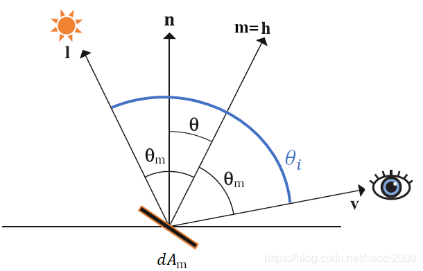
Figure 30: Torrance-Sparrow Model
首先第一步是计算面向 \(m\) 的微平面接收光线 \(l\) 的辐射, 根据
NDF中 \(dA_{m} = D(m) d\omega_m dA\) 的关系和辐射的定义: \(L(p, l) = \frac{d^2\Phi}{d\omega_l dA_{m}^{\perp}}\).根据该关系求出 \(d^2 \Phi\):
\(\begin{equation*}\begin{aligned}d^2\Phi &= L(p, l) d\omega_l dA_{m}^{\perp} \\ &= L(p, l)d\omega_l \cos\theta_l dA_m \\ &= L(p, l) d\omega_l (l \cdot m) dA_m \\ &= L(p, l) d\omega_l (l \cdot m) D(m) d\omega_m dA \\ \end{aligned}\end{equation*}\)
其中 \(\theta_l\) 是微平面的面法线 \(m\) 和光线 \(l\) 之间的夹角, \(\theta_l = \theta_m\).
因为要模拟能量受到损失的过程, 所以是计算光线入射到微平面的辐射度量, 而不是宏表面受到的辐射度量.
再根据菲涅耳反射可以求出反射光 \(v\) 的 \(d^2 \Phi_v\): \(d^2\Phi_v = F(v, m, F_0)d^2\Phi = F(l, m, F_0)d^2\Phi\).
根据极坐标的微元立体角定义: \(\frac{d\omega_m}{d\omega_v} = \frac{\sin\theta_m \times d\theta_m \times d\phi_m}{\sin\theta_i \times d\theta_i \times d\phi_i}\).
这里是以向量的微元作为微元立体角.
因为 \(\theta_i = 2\theta_m\), \(\phi_i = \phi_m\), 因此可以利用正弦二倍角公式: \(\sin2\theta = 2\sin\theta\cos\theta\), 可以得到 \(\frac{d\omega_m}{d\omega_v} = \frac{\sin\theta_m d\theta_m}{2\sin\theta_m\cos\theta_m d\theta_m} = \frac{1}{4 \cos\theta_m} = \frac{1}{4 (l \cdot m)}\).
然后求出反射光 \(v\) 的辐射:
\(\begin{equation*} \begin{aligned} L(p, v) &= \frac{d^2 \Phi_v}{d\omega_v \cos\theta_v dA} \\ &= \frac{F(l, m, F_0)d^2\Phi}{d\omega_v (v \cdot n) dA} \\ &= \frac{F(l, m, F_0) L(p, l) d\omega_l (l \cdot n) D(m) d\omega_m dA}{d\omega_v (v \cdot n) dA} \\ &= \frac{F(l, m, F_0)L(p, l) d\omega_l D(m)}{4 (v \cdot n)} \end{aligned} \end{equation*}\)
其中, \(\theta_v\) 是宏表面的法线 \(n\) 与视线 \(v\) 之间的夹角.
正如公式所示, 反射光的辐射是宏表面的反射光辐射, 理论上其实微平面和宏表面的反射光辐射是一样的, 但最终反射率方程还是要落实到宏表面上的, 因为微平面是统计出来的, 并不像宏表面是实际存在的.
根据
Fred Nicodemus的BRDF定义: \(f_r(\omega_i, \omega_o) = \frac{d L_o (\omega_o)}{d E_i(\omega_i)} = \frac{d L_o(\omega_o)}{L_i(\omega_i) \cos\theta_i d\omega_i}\), 把前面的结果代入 \(\begin{equation*} \begin{cases} dL_o(\omega_o) = L(p, v) \\ L_i(\omega_i) = L(p, l) \\ \theta_i = \theta_l \\ d\omega_i = d\omega_l \end{cases} \end{equation*}\),得到 \(f_r(l, v) = \frac{F(l, m, F_0)L(p, l) d\omega_l D(m)}{4 (v \cdot n) L(p, l) \cos\theta_l d\omega_l} = \frac{F(l, m, F_0) D(m)}{4 (v \cdot n) (l \cdot n)}\).
最后, 加入几何函数就得到
Cook-Torrance BRDF中的 \(f_{\mathrm{cook-torrance}} = \frac{F(l, m, F_0) D(m) G(v, l, m)}{4 (v \cdot n) (l \cdot n)}\).
2.3.4. 完整的反射率方程
经过前面的推导后, 我们对反射率方程有了新的认识:
\(L_o(p, \omega_o) = \int_{\Omega} (k_{\mathrm{diffuse}} \frac{c}{\pi} + k_{\mathrm{specular}} \frac{F(\omega_i, h, F_0) D(m) G(\omega_o, \omega_i, h)}{4(\omega_o \cdot n)(\omega_i \cdot n)}) L_i(p, \omega_i) n \cdot \omega_i d\omega_i\), 其中 \(h = \frac{\omega_i + \omega_o}{|\omega_i + \omega_o|}\).
可以进一步变换, 把方程分成漫反射辐射度(diffuse irradiance)和镜面反射辐射度(specular irradiance):
\(\begin{equation*} \begin{aligned} L_o(p, \omega_o) &= \int_{\Omega} k_{\mathrm{diffuse}} \frac{c}{\pi} L_i(p, \omega_i) n \cdot \omega_i d\omega_i + \int_{\Omega} k_{\mathrm{specular}} \frac{F(\omega_i, h, F_0) D(m) G(\omega_o, \omega_i, h)}{4(\omega_o \cdot n)(\omega_i \cdot n)} L_i(p, \omega_i) n \cdot \omega_i d\omega_i \\ &= k_{\mathrm{diffuse}} \frac{c}{\pi} \int_{\Omega} L_i(p, \omega_i) n \cdot \omega_i d\omega_i + k_{\mathrm{specular}} \int_{\Omega} \frac{F(\omega_i, h, F_0) D(m) G(\omega_o, \omega_i, h)}{4(\omega_o \cdot n)(\omega_i \cdot n)} L_i(p, \omega_i) n \cdot \omega_i d\omega_i \end{aligned} \end{equation*}\)
2.3.5. 创作 PBR 材质 (Authoring PBR Materials)

Figure 31: 常见 PBR 贴图
在了解 PBR 的理论以后, 就可以描述美术人员如何为 PBR 方程创作制作表面的物理参数, 每个参数都可以通过纹理贴图来定义或建模, 并且纹理贴图能够以逐片元的精度(per-fragment)控制表面的物理属性.
以下是 PBR 管线中常用的贴图类型:
反射贴图 (
Albedo texture)反射贴图为每个纹素(
texel)指定表面的颜色, 如果纹素为金属材质则对应其基础反射率.作用基本上与中的漫反射贴图 (
diffuse texture) 一致, 漫反射贴图通常包含了细微阴影或暗部凹陷, 这正是反射贴图需要避免的部分, 只能包含表面颜色或者金属的基础反射率.反射贴图是 \(f_{\mathrm{lambert}} = \frac{c}{\pi}\) 中的 \(c\) 的来源.
法线贴图 (
Normal map)法线贴图逐片元地指定宏表面的法线, 是 \(n\) 的来源, 用来模拟表面的凹凸效果.
金属贴图 (
Metallic map)金属贴图定义纹素是否金属, 从金属贴图取得的值被称为金属度,
通常为灰度值(
grayscale value), 或直接使用非黑即白的二值化形式.如果金属度不为 1, 那么材质就被认为是非金属材质, 通常渲染引擎会采用一个表示非金属材质的值作为默认值.
金属度影响的是
PBR菲涅耳反射 \(F\) 中的镜面反射率 \(F_0\) 的计算, 以及漫反射系数 \(k_{\mathrm{diffuse}}\) 的计算.严格来说, \(F_0\) 是由反射率 \(c\) 和金属度 \(m\) 共同影响的: \(F_0 = c_0 + (c - c_0) \times m\).
其中 \(c_0\) 为默认反射率, 这个值通常表示是 \((0.03, 0.03, 0.03)\), \(c\) 和 \(c_0\) 均为向量.
这条公式实际上是近似计算, 在原本的计算中, 需要讨论材质是金属才是非金属,
如果是金属材质, 那么认为表面不存在漫反射, 镜面反射为最大, 也就是直接以 \(c\) 作为镜面反射率: \(F_0 = c\);
如果是非金属材质, 那么 \(F_0 = \frac{(n_1 - n_2)^2}{(n_1 + n_2)^2}\), \(n_1\) 和 \(n_2\) 分别是两种介质的折射率(
index of refraction),通常 \(n_1\) 是空气的折射率 1, \(n_2\) 为非金属表面的折射率, \(F_0\) 意味着从空气射入到表面中时的镜面反射率.
要找出特定非金属材质的金属度, 先在 IOR LIST 找到该材质的折射率 \(n_2\) 算出 \(F_0\), 最后计算出金属度 \(m = \frac{F_0 - s}{c - s}\).
\(k_{\mathrm{diffuse}}\) 也存在类似关系, 如果金属度为 1, 那么就认为漫反射为 0: \(k_{\mathrm{diffuse}} = c + ((0, 0, 0) - c) \times m\).
粗糙度贴图 (
Roughness map)粗糙度贴图以逐纹素的方式定义表面的粗糙度. 粗糙贴图是
BRDF中 \(D\) 和 \(G\) 项粗糙度 \(\alpha\) 的来源.表面越粗糙, 反射越宽泛且模糊, 而越光滑, 反射越集中且清晰, 简单点说就是影响高亮光圈的大小以及亮度.
部分引擎使用光滑度贴图 (
Smoothness map) 而非粗糙度贴图, 可以通过 \(1.0 - \alpha\) 转换成粗糙度.环境光遮蔽贴图 (
Ambient occlusion map, 简称AO map)环境光遮蔽贴图为表面以及其周围几何体设置额外的阴影因子 \(ao\) , 给反射贴图补充阴影信息, 模拟几何遮挡导致的环境光衰减.
注意, 是只影响环境光部分, 不影响直接光照, 大概为 \(ao \times ambient\), 其中 \(ambient\) 是环境光.
2.3.6. GLSL 实现
该实现的 Fragment Shader 来源于 LearnOpenGL, 但作了一些调整, 使得可用于 WebGL.
以下 Shader 作为场景中每个物体的材质.
Vertex Shader:
#version 100 #if defined(USE_TEXTURE) attribute vec3 aTangent; attribute vec3 aBitangent; #endif attribute vec3 aNormal; attribute vec3 aPos; attribute vec2 aTexCoords; varying vec2 TexCoords; varying vec3 WorldPos; #if defined(USE_TEXTURE) varying mat4 TBN; #else varying vec3 Normal; #endif uniform mat4 ModelMatrix; uniform mat4 ViewMatrix; uniform mat4 ProjectMatrix; void main() { #if defined(USE_TEXTURE) vec3 T = normalize(vec3(ModelMatrix * vec4(aTangent, 0.0))); vec3 B = normalize(vec3(ModelMatrix * vec4(aBitangent, 0.0))); vec3 N = normalize(vec3(ModelMatrix * vec4(aNormal, 0.0))); TBN = mat3(T, B, N); #else Normal = aNormal; #endif TexCoords = aTexCoords; WorldPos = ModelMatrix * vec4(aPos, 1.0); gl_Position = ProjectMatrix * ViewMatrix * WorldPos; }
Fragment Shader:
#version 100 varying vec2 TexCoords; varying vec3 WorldPos; #if defined(USE_TEXTURE) varying mat4 TBN; // material textures uniform sampler2D albedoMap; uniform sampler2D normalMap; uniform sampler2D metallicMap; uniform sampler2D roughnessMap; uniform sampler2D aoMap; #else // material parameters varying vec3 Normal; uniform vec3 albedo; uniform float metallic; uniform float roughness; uniform float ao; #endif // lights uniform vec3 lightPositions[4]; uniform vec3 lightColors[4]; uniform vec3 camPos; const float PI = 3.14159265359; float DistributionGGX(vec3 N, vec3 H, float roughness) { float a = roughness*roughness; float a2 = a*a; float NdotH = max(dot(N, H), 0.0); float NdotH2 = NdotH*NdotH; float num = a2; float denom = (NdotH2 * (a2 - 1.0) + 1.0); denom = PI * denom * denom; return num / denom; } float GeometrySchlickGGX(float NdotV, float roughness) { float r = (roughness + 1.0); float k = (r*r) / 8.0; float num = NdotV; float denom = NdotV * (1.0 - k) + k; return num / denom; } float GeometrySmith(vec3 N, vec3 V, vec3 L, float roughness) { float NdotV = max(dot(N, V), 0.0); float NdotL = max(dot(N, L), 0.0); float ggx2 = GeometrySchlickGGX(NdotV, roughness); float ggx1 = GeometrySchlickGGX(NdotL, roughness); return ggx1 * ggx2; } vec3 fresnelSchlick(float cosTheta, vec3 F0) { return F0 + (1.0 - F0) * pow(clamp(1.0 - cosTheta, 0.0, 1.0), 5.0); } #if defined(USE_TEXTURE) vec3 getNormalFromNormalMap() { // obtain normal from normal map in range [0,1] vec3 normal = texture(normalMap, TexCoords).rgb; // transform normal vector back to range [-1,1] normal = normal * 2.0 - 1.0; return normalize(TBN * normal); } #endif void main() { #if defined(USE_TEXTURE) vec3 albedo = pow(texture(albedoMap, TexCoords).rgb, 2.2); // with Crt Gamma vec3 N = getNormalFromNormalMap(); float metallic = texture(metallicMap, TexCoords).r; float roughness = texture(roughnessMap, TexCoords).r; float ao = texture(aoMap, TexCoords).r; #else vec3 N = normalize(Normal); #endif vec3 V = normalize(camPos - WorldPos); vec3 F0 = vec3(0.04); F0 = mix(F0, albedo, metallic); // reflectance equation vec3 Lo = vec3(0.0); for(int i = 0; i < 4; ++i) { // calculate per-light radiance vec3 L = normalize(lightPositions[i] - WorldPos); vec3 H = normalize(V + L); float dist = length(lightPositions[i] - WorldPos); float attenuation = 1.0 / (dist * dist); vec3 radiance = lightColors[i] * attenuation; // cook-torrance brdf float NDF = DistributionGGX(N, H, roughness); float G = GeometrySmith(N, V, L, roughness); vec3 F = fresnelSchlick(max(dot(H, V), 0.0), F0); vec3 kS = F; vec3 kD = vec3(1.0) - kS; kD *= 1.0 - metallic; vec3 numerator = NDF * G * F; float denominator = 4.0 * max(dot(N, V), 0.0) * max(dot(N, L), 0.0) + 0.0001; vec3 specular = numerator / denominator; // add to outgoing radiance Lo float NdotL = max(dot(N, L), 0.0); Lo += (kD * albedo / PI + specular) * radiance * NdotL; } vec3 ambient = vec3(0.03) * albedo * ao; vec3 color = ambient + Lo; color = color / (color + vec3(1.0)); color = pow(color, vec3(1.0/2.2)); // Gamma Correction gl_FragColor = vec4(color, 1.0); }
3. 阴影
阴影生成并没有用到什么新的数学公式, 所有的数学公式全都在之前的文章用总结完了.
阴影的生成很简单, 首先用一组 Shader 的 vertex shader 以光线为角度生成一个 depth buffer (depth map) 并储存在贴图中,
这个贴图就叫做阴影贴图 (shadow map); 然后在另外一组 Shader 的 fragment shader 中,
计算出相机"眼中"的 \(P\) 点在光源"眼中"的 \(NDC\) 坐标: \(P_{ndc}\), 再对 \(P_{ndc}\) 进行归一化: \(P_{normal} = (u, v, d) = P_{ndc} * 0.5 + 0.5\),
再以 \(P_{normal}.xy\) 作为 UV 从阴影贴图中获取深度 \(d_c\), \(P_{normal}.z\) 是 \(P\) 在在光源"眼中"的深度,
最后对比 \(d_c\) 和 \(P_{normal}.z\), 如果 \(d_c \le P_{normal}.z\), 那就说明 \(P\) 在阴影中.
需要注意的是, 这里的 depth buffer 所使用的深度值是线性深度值.

Figure 32: 阴影贴图
定向光源和位置光源生成阴影的方式是不一样的, 定向光源的发射光只有一个方向, 因此只需要一张 2D 阴影贴图,
位置光源的发射光是全方位的, 一张 2D 阴影贴图不足以记录全方位的阴影, 因此需要一个立方体贴图(Cubemap)作为阴影贴图.
另外, 定向光源和位置光源两者的阴影形状是不一样的, 定向光源和位置光源分别需要正交投影和透视投影生成阴影的形状.

Figure 33: 正交投影 vs 透视投影
3.1. 定向光源的阴影
通过光源进行 正交投影, 计算出要成像的顶点 \(P_{object}\) 在光源"眼中所见"的投影坐标 \(P_{clip}\), 并生成阴影贴图:
\(P_{clip} = M_{\mathrm{light\_ortho\_proj}}M_{\mathrm{light\_view}}M_{\mathrm{model}} P_{object}\)
该等式用在第一组
Shader的vertex shader中, 用来生成阴影贴图;此外, 还会用在第二组
Shader的fragment shader中, 用来计算当前片元的线性深度值.// vertex shader #version 330 attribute vec3 aPos; uniform mat4 uLightOrthoProjMatrix; uniform mat4 uLightViewMatrix; uniform mat4 uModelMatrix; void main() { gl_Position = uLightOrthoProjMatrix * uLightViewMatrix * uModelMatrix * vec4(aPos, 1.0); }
// fragment shader #version 330 void main() { gl_FragDepth = gl_FragCoord.z; }
这组
Shader需要作为场景中每个物体的材质, 再对整个场景进行渲染, 渲染结果就是我们想要的阴影贴图.\(P_{clip}\) 需要在第二组
Shader的vertex shader中进行计算, 并传到第二组Shader的fragment shader中,再根据 \(P_{clip}\) 计算出线性深度值 \(d_{\mathrm{linear}}\), 从阴影贴图中找出与它相关的深度值 \(d_{c}\), 对两者进行对比, 从而确定该片元是否处于阴影之中:
// vertex shader #version 330 precision highp float; in vec3 aPos; in vec3 aNormal; in vec3 aTexCoord; out VS_OUT { vec3 fragPos; vec3 normal; vec2 texCoord; vec4 fragPosLightSpace; } vs_out; uniform mat4 uProjectionMatrix; uniform mat4 uViewMatrix; uniform mat4 uModelMatrix; uniform mat4 uLightOrthoProjMatrix; uniform mat4 uLightViewMatrix; void main() { vs_out.fragPos = vec3(uModelMatrix * vec4(aPos, 1.0)); vs_out.normal = transpose(inverse(mat3(uModelMatrix))) * aNormal; vs_out.texCoord = aTexCoord; vs_out.fragPosLightSpace = uLightOrthoProjMatrix * uLightViewMatrix * vec4(vs_out.fragPos, 1.0); gl_Position = uProjectionMatrix * uViewMatrix * vec4(vs_out.fragPos, 1.0); }
// fragment shader #version 330 precision highp float; out vec4 fragColor; in VS_OUT { vec3 fragPos; vec3 normal; vec2 texCoord; vec4 fragPosLightSpace; } fs_in; uniform vec3 lightPos; uniform vec3 cameraPos; uniform sampler2D shadowMap; uniform sampler2D diffuseTexture; float ShadowCalculation(vec4 fragPosLightSpace) { // perform perspective divide, be NDC vec3 fragPosLightNDC = fragPosLightSpace.xyz / fragPosLightSpace.w; // transform to [0,1] range, be UV vec3 fragPosLightNormal = fragPosLightNDC * 0.5 + 0.5; float closestDepth = texture2D(shadowMap, fragPosLightNormal.xy).r; float currentFragDepth = fragPosLightNormal.z; float shadow = currentFragDepth > closestDepth ? 1.0: 0.0; return shadow; } void main() { vec3 color = texture2D(diffuseTexture, fs_in.texCoord).rgb; vec3 normal = normalize(fs_in.normal); vec3 lightColor = vec3(1.0); // ambient vec3 ambient = 0.15 * lightColor; // diffuse vec3 lightDir = normalize(lightPos - fs_in.fragPos); float diff = max(dot(lightDir, normal), 0.0); vec3 diffuse = diff * lightColor; // specular vec3 viewDir = normalize(cameraPos - fs_in.fragPos); vec3 halfwayDir = normalize(lightDir + viewDir); float spec = pow(max(dot(normal, halfwayDir), 0.0) 64.0); vec3 specular = spec * lightColor; // calculate shadow float shadow = ShadowCalculation(fs_in.fragPosLightSpace); vec3 lighting = (ambient + (1.0 - shadow) * (diffuse + specular)) * color; fragColor = vec4(lighting, 1.0); }
3.1.1. 阴影自遮挡 (Shadow Acne)
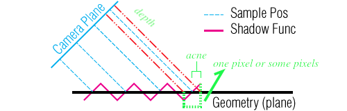
从 Camera Plane 到 Shadow Func 之间的距离: Sample Pos, 表示像素从阴影贴图上对应的深度值 \(d_{c}\);
红色虚实线表示在 fragment shader 中实时计算的深度值 \(P_{normal}.z\).
图像 Shadow Func 反映了一个区域上若干像素的实时深度值在不同位置上的变化, 以及阴影贴图深度值在不同位置上都是一致的,
这是阴影贴图是对连续对象进行采样(离散化)的结果, 对连续对象进行离散化后, 离散结果与连续对象相比必然会有精度差异的,
无法避免的, 提升采样精度也不可能解决这个问题, 这就是自遮挡产生的原因:
同一个区域的像素有一部分的实时深度值 \(P_{normal}.z\) 大于贴图上的深度值 \(d_{c}\).
因此, 可以立马想到一个解决自遮挡问题的方法: 让实时深度值 \(P_{normal}.z\) 减去一个偏移值 \(b\) 后再与贴图深度值 \(d_{c}\) 进行对比,
又或者让贴图深度值加上偏移值 \(b\) 后与实时深度值进行对比, 其中 \(b\) 是一个很小的值, 这个方法叫做 shadow bias.
但是, 这个偏移值 \(b\) 应该如何决定呢? 从图中可以发现, 偏移值大小和光线与 Geometry 之间的夹角 \(\theta \in [0, \pi]\) 有关.
当 \(\theta \to \frac{\pi}{2}\) 时, 自遮挡现象就呈消失趋势, 因为实时深度值和贴图深度值大小是一致的, 因此, \(b\) 接近于 0;
当 \(\theta \to 0\) 或 \(\theta \to \pi\), 自遮挡现象开始出现, \(|b|\) 越大.
这符合 \(cosine\) 函数的描述, 所以 \(b = \cos\theta\).
但通常只能拿到光线方向 \(l\) 和 Geometry 的法线 \(n\), 这个时候 \(b = 1 - \cos\theta_{n}\), 其中 \(\theta_{n} \in [0, \frac{\pi}{2}]\) 是 \(l\) 和 \(n\) 的夹角, \(\cos\theta_{n} = l \cdot n\).
不过 \(b \in [0, 1]\), 不满足很小的要求, 所以这里对它重新映射: \([0.0005, 0.005]\).
float ShadowCalculation(vec4 fragPosLightSpace, vec3 normal, vec3 lightDir) { // parameter 'normal' and 'lightDir' need to be normalized beforehand // perform perspective divide, be NDC vec3 fragPosLightNDC = fragPosLightSpace.xyz / fragPosLightSpace.w; // transform to [0,1] range, be UV vec3 fragPosLightNormal = fragPosLightNDC * 0.5 + 0.5; float closestDepth = texture2D(shadowMap, fragPosLightNormal.xy).r; float currentFragDepth = fragPosLightNormal.z; float bias = max(0.005 * (1.0 - dot(normal, lightDir)), 0.0005); float shadow = currentFragDepth - bias > closestDepth ? 1.0: 0.0; return shadow; } void main() { // ... float shadow = ShadowCalculation(fs_in.fragPosLightSpace, normal, lightDir); // ... }
需要注意的是, 偏移值不能太小, 否则无法完全解决自遮挡问题.
虽然 Shadow Bias 解决了自遮蔽, 但也引入了一个新问题: 阴影发生了偏移, 这个问题被称为 Peter Panning.
3.1.2. Peter Panning
3.1.3. 阴影边缘柔化 (PCF, Percentage-closer filtering)
由于阴影贴图的分辨率是固定且有限的, 这导致阴影有锯齿.
通常第一反应就是通过增加阴影贴图的分辨率进行解决, 又或者让光源的视椎体尽可能贴近场景.
然而这些都不是好方法, 锯齿可以通过反走样处理(anti-aliasing)进行解决, 对阴影进行反走样被成为 PCF.
PCF 有很多种实现, 最简单的实现为 Box Filtering, 也被成为盒装模糊.
以下是经过改进的实现:
float ShadowCalculation(vec4 fragPosLightSpace, vec3 normal, vec3 lightDir) { // parameter 'normal' and 'lightDir' need to be normalized beforehand // perform perspective divide, be NDC vec3 fragPosLightNDC = fragPosLightSpace.xyz / fragPosLightSpace.w; // transform to [0,1] range, be UV vec3 fragPosLightNormal = fragPosLightNDC * 0.5 + 0.5; float currentFragDepth = fragPosLightNormal.z; float bias = max(0.005 * (1.0 - dot(normal, lightDir)), 0.0005); float shadow = 0.0; // vec2 texelSize = 1.0 / textureSize(shadowMap, 0); // use this if textureSize is available vec2 texelSize = 1.0 / vec2(shadowMap_size); // shadowMap_size is the size of shadow map for (int x = -1; x <= 1; x++) { for (int y = -1; y <= 1; y++) { float closestDepth = texture2D(shadowMap, fragPosLightNormal.xy + vec2(x, y) * texelSize).r; shadow += currentFragDepth - bias > closestDepth ? 1.0: 0.0; } } shadow /= 9.0; return shadow; }
3.2. 位置光源的阴影
相比定向光源只有一个照射方向, 位置光源在四面八方都有照射, 所以需要 6 张二维贴图来记录深度值.

但用 6 张贴图的话, 需要手动根据光照方向计算出应从哪张贴图进行采样, 因此, 使用立方贴图(cubemap)可以省去这些工作.
在此之前需要了解如何在立方贴图上采样, 二维贴图是根据 UV 坐标进行采样, 而立方贴图是根据方向向量进行采样,
以 \(1 \times 1 \times 1\) 单位立方体的中心作为坐标系的原点, 而这个原点是和模型中心是重合的,
因此模型的顶点坐标就是方向向量, 可用于立方贴图的采样. 另外, 方向向量的模大小无关紧要.

生成立方阴影贴图时, 需要在每个面的方向上进行透视投影, 在 WebGL 和 OpenGL 上的做法会有些差别,
OpenGL 3.2+ 开始支持 Geometry Shader, 可以使用 Geometry Shader 完成这项工作;
但 WebGL 不支持, 在 WebGL 上生成立方阴影贴图要在 CPU 端完成, 具体做法可以参考这个链接.
在这个过程中保证贴图之间的 UV 的连贯性，因此在投影时需要注意光源"相机"在不同方向上的 look 和 up 向量组合,
具体可以看官方给出的参考图:
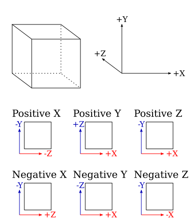
以下是计算阴影矩阵并生成阴影贴图的 WebGL 实现:
// 这里使用了 glMatrix 实现矩阵操作: https://glmatrix.net/ let CUBE_LOOK_DIR = [ { target: gl.TEXTURE_CUBE_MAP_POSITIVE_X, lookAt: vec3.fromValues(1.0, 0.0, 0.0), up: vec3.fromValues(0.0, -1.0, 0.0) }, { target: gl.TEXTURE_CUBE_MAP_NEGATIVE_X, lookAt: vec3.fromValues(-1.0, 0.0, 0.0), up: vec3.fromValues(0.0, -1.0, 0.0) }, { target: gl.TEXTURE_CUBE_MAP_POSITIVE_Y, lookAt: vec3.fromValues(0.0, 1.0, 0.0), up: vec3.fromValues(0.0, 0.0, 1.0) }, { target: gl.TEXTURE_CUBE_MAP_NEGATIVE_Y, lookAt: vec3.fromValues(0.0, -1.0, 0.0), up: vec3.fromValues(0.0, 0.0, -1.0) }, { target: gl.TEXTURE_CUBE_MAP_POSITIVE_Z, lookAt: vec3.fromValues(0.0, 0.0, 1.0), up: vec3.fromValues(0.0, -1.0, 0.0) }, { target: gl.TEXTURE_CUBE_MAP_NEGATIVE_Z, lookAt: vec3.fromValues(0.0, 0.0, -1.0), up: vec3.fromValues(0.0, -1.0, 0.0) }, ]; let CUBE_PROJECTION = mat4.perspective(mat4.create(), Math.PI/2, aspect, near, far); let shadowMatrices = []; let shadowCubeMap = gl.createTexture(); gl.bindTexture(gl.TEXTURE_CUBE_MAP, shadowCubeMap); for (let side of CUBE_LOOK_DIR) { // 为对应面的贴图分配空间 gl.texImage2D( CUBE_LOOK_DIR[side].target, 0, gl.DEPTH_COMPONENT, shadowMapSize, shadowMapSize, 0, gl.DEPTH_COMPONENT, gl.UNSIGNED_SHORT, null ); } let shadowFrameBuffer = gl.createFramebuffer(); gl.bindFramebuffer(gl.FRAMEBUFFER, shadowFrameBuffer); let matrixLocation = gl.getUniformLocation(shadowShaderProgram, "u_ViewProjection"); //change to right framebuffer... for (let side = 0; side<6;side++) { gl.clear(gl.COLOR_BUFFER_BIT | gl.DEPTH_BUFFER_BIT); gl.framebufferTexture2D( gl.FRAMEBUFFER, gl.DEPTH_ATTACHMENT, CUBE_LOOK_DIR[side].target, shadowCubeMap, 0); let view = mat4.lookAt( mat4.create(), lightPos, vec3.add(vec3.create(), lightPos, CUBE_LOOK_DIR[side].lookAt), CUBE_LOOK_UP[side].up); let uViewProjection = mat4.mul(mat4.create(), CUBE_PROJECTION, view); shadowMatrices[side] = uViewProjection; // upload uniforms including uViewProjection gl.uniformMatrix4fv(matrixLocation, false, uViewProjection); // render scene } // 在渲染场景的 shader 程序中上传 uniforms let textureLocation = gl.getUniformLocation(sceneShaderProgram, "u_shadowCubeMap"); gl.uniform1i(textureLocation, 0);
如果支持 Geometry Shader, 就不需要分别手动渲染 6 次了, 这样可以减少 5 次几何数据的提交,
既提高了开发效率, 也优化运行效率. 需要注意的是, 使用 Geometry Shader 时, CUBE_LOOK_DIR 的顺序必须严格和上面的一样.
从上面可以看出, 为位置光源生成阴影贴图实际上是很浪费性能的操作,
如果位置光源是固定的, 那么应该使用烘培: 把第一次生成阴影贴图和接收阴影的物体的贴图进行合并. 尽可能不使用动态的位置光源.
总的来说, 位置光源的阴影实现思路和定向光源的差别不大, 因此这里就加快进度了.
生成阴影贴图
以下是用于生成立方体阴影贴图的
Shaders:// vertex shader #version 330 layout (location = 0) in vec3 aPos; uniform mat4 uModelMatrix; void main() { gl_Position = uModelMatrix * vec4(aPos, 1.0); }
// geometry shader #version 330 layout (triangles) in; // 输入图元为三角形, 即长度为 3 的顶点流 layout (triangle_strip, max_vertices=18) out; // 输出图元为三角形, 最多 18 个顶点, 一个三角形三个顶点, 也就是输出 6 次 uniform mat4 shadowMatrices[6]; out vec4 FragPos; // FragPos from GS (output per emitvertex) void main() { // 总共输出 6 层图形, 每个图层都有自己的索引, 索引从 0 开始 for(int face = 0; face < 6; ++face) { gl_Layer = face; // gl_Layer 为内置变量, 用于指定多层帧缓冲附件的层级 // https://registry.khronos.org/OpenGL-Refpages/gl4/html/gl_Layer.xhtml for(int i = 0; i < 3; ++i) // 每个三角形有三个顶点, 这针对顶点进行处理 { FragPos = gl_in[i].gl_Position; // gl_in 为内置变量, 用来获取上一个阶段顶点计算结果 // https://www.khronos.org/opengl/wiki/Built-in_Variable_(GLSL)#Geometry_shader_inputs gl_Position = shadowMatrices[face] * FragPos; EmitVertex(); // 把当前顶点的 gl_Position 设置提交到当前图元中 } EndPrimitive(); // 提交当前图元的修改, 生成图元 } }
// fragment shader #version 330 in vec4 FragPos; uniform vec3 lightPos; uniform float far_plane; void main() { // get distance between fragment and light source float lightDistance = length(FragPos.xyz - lightPos); // map to [0;1] range by dividing by far_plane lightDistance = lightDistance / far_plane; // write this as modified depth gl_FragDepth = lightDistance; }
相比定向光源中阴影贴图
Shader采用了内置深度值作为阴影深度值, 这里的Fragment Shader中自行计算了阴影深度值 \(d_c\):直接以片元与光源的世界坐标距离的归一化结果作为深度值. 这个算法有一个好处, 那就是容易在后面的
ShadowCalculation函数中计算出片元的阴影深度.判断片元是否处于阴影之中
// vertex shader #version 330 in vec3 aPos; in vec3 aNormal; in vec2 aTexCoord; out VS_OUT { vec3 fragPos; vec3 normal; vec2 texCoord; } vs_out; uniform mat4 uProjectionMatrix; uniform mat4 uViewMatrix; uniform mat4 uModelMatrix; void main() { vs_out.fragPos = vec3(uModelMatrix * vec4(aPos, 1.0)); vs_out.normal = transpose(inverse(mat3(uModelMatrix))) * aNormal; vs_out.texCoord = aTexCoord; gl_Position = uProjectionMatrix * uViewMatrix * uModelMatrix * vec4(aPos, 1.0); }
// fragment shader #version 330 precision highp float; out vec4 fragColor; in VS_OUT { vec3 fragPos; vec3 normal; vec2 texCoord; } fs_in; uniform vec3 lightPos; uniform vec3 cameraPos; uniform samplerCube shadowMap; uniform sampler2D diffuseTexture; uniform float far_plane; float ShadowCalculation(vec3 fragPos) { vec3 lightToFrag = fragPos - lightPos; float closestDepth = texture(shadowMap, lightToFrag).r; // range: [0, 1] closestDepth *= far_plane; // transform back to original value float currentFragDepth = length(lightToFrag); float shadow = currentFragDepth > closestDepth ? 1.0: 0.0; return shadow; } void main() { vec3 color = texture2D(diffuseTexture, fs_in.texCoord).rgb; vec3 normal = normalize(fs_in.normal); vec3 lightColor = vec3(1.0); // ambient vec3 ambient = 0.15 * lightColor; // diffuse vec3 lightDir = normalize(lightPos - fs_in.fragPos); float diff = max(dot(lightDir, normal), 0.0); vec3 diffuse = diff * lightColor; // specular vec3 viewDir = normalize(cameraPos - fs_in.fragPos); vec3 halfwayDir = normalize(lightDir + viewDir); float spec = pow(max(dot(normal, halfwayDir), 0.0) 64.0); vec3 specular = spec * lightColor; // calculate shadow float shadow = ShadowCalculation(fs_in.fragPos); vec3 lighting = (ambient + (1.0 - shadow) * (diffuse + specular)) * color; fragColor = vec4(lighting, 1.0); }
解决自遮蔽问题
float ShadowCalculation(vec3 fragPos, vec3 normal) { vec3 lightToFrag = fragPos - lightPos; vec3 lightDir = -normalize(lightToFrag); float closestDepth = texture(shadowMap, lightToFrag).r; // range: [0, 1] closestDepth *= far_plane; // transform back to original value float currentFragDepth = length(lightToFrag); float bias = max(0.005 * (1.0 - dot(normal, lightDir)), 0.0005); float shadow = currentFragDepth - bias > closestDepth ? 1.0: 0.0; return shadow; } void main() { // ... float shadow = ShadowCalculation(fs_in.fragPosLightSpace, normal); // ... }
PCF
按照
Box Filtering方法实现PCF, 代码如下:float ShadowCalculation(vec4 fragPos, vec3 normal) { vec3 lightToFrag = fragPos - lightPos; vec3 lightDir = -normalize(lightToFrag); float currentFragDepth = length(lightToFrag); float shadow = 0.0; float offset = 1.0; float samples = 4.0; float increment = offset / (samples * 0.5); for (int x = -offset; x < offset; x += increment) { for (int y = -offset; y < offset; y += increment) { for (int z = -offset; z < offset; z += increment) { vec3 ld = normalize(lightDir + vec3(x, y, z)); float bias = max(0.005 * (1.0 - dot(normal, ld)), 0.0005); float closestDepth = texture(shadowMap, ld).r; closestDepth *= far_plane; shadow += currentFragDepth - bias > closestDepth ? 1.0: 0.0; } } } shadow /= (samples * samples * samples); return shadow; }
这个
PCF每个阴影像素进行了 64 次采样, 但有不少采样是重复的, 我们可以直接硬编码下不重复的组合.
4. 附录
4.1. 斜率空间 (Slope Space)
斜率空间实际上是基于平面上直线的斜率推广到三维空间.
对于平面上的直线 \(y = kx + b\), 它的斜率为 \(k = \frac{\Delta y}{\Delta x}\), 是关于 \(\frac{\Delta y}{\Delta x}\) 的变化率, 这是二维空间上的斜率.
对于三维空间中的直线 \(z = Ax + By + c\), 它的斜率是一个二维向量 \((A = \frac{\Delta z}{\Delta x}, B = \frac{\Delta z}{\Delta y})\), 这个向量(梯度向量)就是斜率空间的一个对象,
为了避免符号冲突, 我们给斜率空间的对象上面加上波浪号, 比如可以用 \(\widetilde{k}\) 来表示该直线的斜率, 它的分量分别是 \(\widetilde{x} = A\) 和 \(\widetilde{y} = B\).
那么我们应该如何把三维向量 \(n = (x, y, z)\) 转换成斜率空间对象 \(\widetilde{n} = (\widetilde{x}, \widetilde{y})\) 呢?
核心思想和三维直线是一样的, \(\widetilde{x}\) 和 \(\widetilde{y}\) 都和 \(z\) 有关, 那么就把 \(z\) 作为参数对 \(n\) 进行参数化.

Figure 34: 笛卡尔空间的向量 \(n\) 如何映射到斜率空间得到 \(\widetilde{n}\)
\(n\) 在平面 \(xz\) 上的投影为 \(n_{x} = (x, 0, z)\), 该平面以逆时针为旋转方向,
这个旋转方向是由平面的两个基向量的叉积结果决定的, 该叉积结果是一个垂直于平面的法线向量, 法线向量决定了平面是背面还是正面,
非特殊情况下, 一个平面笛卡尔坐标系只要满足在水平方向往右以及在垂直方向往上为正, 那么这个平面就是为正面, 只要是正面, 那么旋转方向就为逆时针方向.
\(\widetilde{x} = \tan (-\beta) = \tan[-(\frac{\pi}{2} - \alpha)] = -\cot \alpha = -\frac{\Delta x}{\Delta z} = -\frac{x}{z}\).

Figure 35: 向量 \(n\) 在 平面 \(xz\) 上的投影
\(n\) 在平面 \(yz\) 上的投影为 \(n_{y} = (0, y, z)\), 该平面以顺时针为旋转方向,
\(\widetilde{y} = \tan (-B) = \tan[-(\frac{\pi}{2} - A)] = -\cot A = -\frac{\Delta y}{\Delta z} = -\frac{y}{z}\).

Figure 36: 向量 \(n\) 在 平面 \(yz\) 上的投影
这里讨论的向量 \(n\) 是属于球体的上半部分, 因此 \(z \gt 0\).
为了对应变化前笛卡尔坐标系的 \(xy\) 平面, 我们让斜率空间在水平方向往左和在垂直方向往下为正,
这样 \(\widetilde{n}\) 就和在 \(z+\) 方向上看到的 \(n\) 一样位于平面的右上角象限,
并且和笛卡尔坐标系中的 \(xy\) 平面一样以逆时针为旋转方向.

Figure 37: 斜率空间上的 \(\widetilde{n} = (\widetilde{x}, \widetilde{y})\)
总结下来, 笛卡尔坐标系的 \(n = (x, y, z)\) 转换成斜率空间 \(\widetilde{n}\) 的方法为: \(\widetilde{n} = (\widetilde{x} = -\frac{x}{z}, \widetilde{y} = -\frac{y}{z})\).
\(n\) 和 \(\widetilde{n}\) 的关系是一对一的(也就是双射关系), 所以可以很简单地把 \(\widetilde{n}\) 转换回笛卡尔坐标系上:
因为 \(n\) 是单位向量, 所以可以得出该关系: \(x^{2} + y^{2} + z^{2} = {z^{2}}(\frac{x^{2}}{z^{2}} + \frac{y^{2}}{z^{2}} + 1) = {z^{2}}(\widetilde{x}^{2} + \widetilde{y}^{2} + 1) = 1\).
然后其中的 \((\widetilde{x}^{2} + \widetilde{y}^{2} + 1) = \frac{1}{{z^{2}}} = |(\widetilde{x}, \widetilde{y}, 1)|^{2} = |(-\widetilde{x}, -\widetilde{y}, 1)|^{2}\).
因为 \(z \gt 0\), 所以 \(|(\widetilde{x}, \widetilde{y}, 1)| = |(-\widetilde{x}, -\widetilde{y}, 1)| = \frac{1}{z}\).
根据以上关系可以得出 \(\frac{(-\widetilde{x}, -\widetilde{y}, 1)}{\sqrt{\widetilde{x}^{2} + \widetilde{y}^{2} + 1}} = \frac{(-(-\frac{x}{z}), -(-\frac{y}{z}), 1)}{\frac{1}{z}} = (x, y, z) = n\).
4.1.1. 斜率空间和极坐标之间的转换
以极角 \(\theta\) 和方位角 \(\phi\) 作为参数进行参数化可以把极坐标转换到斜率空间上.
做法是先把极坐标转换成笛卡尔坐标: \(\begin{equation*}\left\{ \begin{aligned} x &= \sin\theta \cos\phi \\ y &= \sin\theta \sin\phi \\ z &= \cos\theta \end{aligned} \right.\end{equation*}\).
把笛卡尔坐标转换成极坐标: \(\begin{equation*}\left\{ \begin{aligned} \theta &= \arccos(z) \\ \phi &= \arctan(\frac{y}{x}) \end{aligned} \right.\end{equation*}\).
然后把笛卡尔坐标转换到斜率空间上: \(\begin{equation*}\left\{ \begin{aligned} \widetilde{x} &= -\tan\theta \cos\phi \\ \widetilde{y} &= -\tan\theta \sin\phi \end{aligned} \right.\end{equation*}\).
从斜率空间转换会极坐标上稍微需要推导一下,
根据 34, \(|\widetilde{n}| = \sqrt{\widetilde{x}^{2} + \widetilde{y}^{2}} = \sqrt{\frac{x^{2} + y^{2}}{z^{2}}} = \frac{\sqrt{x^{2} + y^{2}}}{z} = \frac{\sqrt{\sin^2\theta (\cos^2\theta + \sin^2\theta)}}{\cos\theta} = \tan\theta\) 是 \(n\) 在 \(xy\) 平面上的投影长度, 所以 \(\theta = \arctan(\sqrt{\widetilde{x}^{2} + \widetilde{y}^{2}})\).
根据笛卡尔坐标到斜率空间上的转换可以得出 \(\tan\phi = \frac{-\widetilde{y}}{-\widetilde{x}} = \frac{-\frac{y}{z}}{\frac{x}{z}} = \frac{y}{x}\).
最终, 得到从斜率空间转换会极坐标上的关系: \(\begin{equation*}\left\{ \begin{aligned} \theta &= \arctan(\sqrt{\widetilde{x}^{2} + \widetilde{y}^{2}}) \\ \phi &= \arctan(\frac{-\widetilde{y}}{-\widetilde{x}}) \end{aligned} \right.\end{equation*}\).
4.1.2. 为什么需要斜率空间
- 微表面是一个高度场, 法线被限制在球体的上半部分中. 而我们的斜率空间是通过参数化球体上半部分(\(z \gt 0\))得到的, 两者非常契合.
通过调整微平面的法线向量 \(n\) 来改变微平面的方向是限制的: 不能让微平面面向球体上半部分以外的范围.
而斜率空间是没有边界的, 因为斜率空间是通过参数化球体上半部分得到的, 所以不管怎么调整 \(\widetilde{n}\) 都不需要担心出现越界问题.
很多 针对表面的线性变换都能在斜率空间上找到对应的变换, 而且两者的对应关系十分简单.
斜率空间的这些变换通常被参数化
BRDF模型用来实现粗糙度, 各向异性.微表面在水平方向上缩放 \((\alpha_{x}, \alpha_{y})\) 倍, 微平面 \(n\) 在斜率空间上的 \(\widetilde{n}\) 就缩放 \((\frac{1}{\alpha_{x}}, \frac{1}{\alpha_{y}})\) 倍.
这里需要透过法线和平面垂直的关系才能看出来, 假设 \(p_{1} = (x_{1}, y_{1}, z_{1})\) 和 \(p_{0} = (x_{0}, y_{0}, z_{0})\) 是平面上的两个点,
这两个点构成的直线 \(l = p_{1} - p_{0} = (x_{1} - x_{0}, y_{1} - y_{0}, z_{1} - z_{0}) = (x_{l}, y_{l}, z_{l})\) 与法线向量 \(n = (x, y, z)\) 垂直:
\(n \cdot l = (x, y, z) \cdot (x_{l}, y_{l}, z_{l}) = 0\).
让平面在水平方向进行缩放会导致直线 \(l\) 在 \(x\) 和 \(y\) 分量上缩放得到: \(l^{'} = (\alpha_{x} x_{l}, \alpha_{y} y_{l}, z_{l})\),
为了保证 \(n \cdot l^{'} = 0\) 成立, \(n\) 需要做如下变换 \((\frac{x}{\alpha_{x}}, \frac{y}{\alpha_{y}}, z)\).
最后把变换后的 \(n\) 转换到斜率空间上得到 \(\widetilde{n} = (-\frac{x}{z \alpha_{x}}, -\frac{y}{z \alpha_{y}}) = (\frac{\widetilde{x}}{\alpha_{x}}, \frac{\widetilde{y}}{\alpha_{y}})\).
接下来其它的变换都是遵守类似的规律: 微表面发生变换, 从而影响微平面的法线变量 \(n\), 进而影响 \(\widetilde{n}\).
因此, 后面会一直使用法线 \(n\) 和直线 \(l = p_{1} - p_{0}\) 作为讨论例子, 不再重复声明, 并且进一步简化描述.
沿着表面的 \(z+\) 方向缩放 \(\alpha\) 倍, 微平面 \(n\) 在斜率空间上的 \(\widetilde{n}\) 就缩放 \(\alpha\) 倍.
对微平面的 \(z\) 分量进行缩放, 得到变换后的直线 \(l^{'} = (x_{l}, y_{l}, \alpha z_{l})\).
为了保证 \(n \cdot l^{'} = 0\), \(n\) 需要变换为 \((x, y, \frac{z}{\alpha})\), 最终 \(\widetilde{n} = (-\frac{\alpha x}{z}, -\frac{\alpha y}{z}) = (-\alpha \widetilde{x}, -\alpha \widetilde{y})\).
围绕 \(z\) 轴对表面旋转 \(\theta\) 度, 斜率空间的斜率也是旋转 \(\theta\) 角.
先假设表面的旋转矩阵为 \(M_{\mathrm{r}} = \left( \begin{array}{c} \cos\theta & -\sin\theta & 0 \\ \sin\theta & \cos\theta & 0 \\ 0 & 0 & 1 \end{array} \right)\), 表面的变换的逆矩阵是其面法线的变换矩阵.
因为 \(M_{r}\) 旋转矩阵(旋转矩阵是正交矩阵), 所以它的转置矩阵就是它的逆矩阵.
由此可得, 法线 \(n\) 的变换矩阵为 \(M_{r}^{-1} = M_{r}^{T} = \left( \begin{array}{c} \cos\theta & \sin\theta & 0 \\ -\sin\theta & \cos\theta & 0 \\ 0 & 0 & 1 \end{array} \right)\).
所以, \(n\) 经过变换后为 \(M_{r}^{-1} n = \left( \begin{array}{c} \cos\theta & \sin\theta & 0 \\ -\sin\theta & \cos\theta & 0 \\ 0 & 0 & 1 \end{array} \right) \left( \begin{array}{c} x \\ y \\ z \end{array} \right) = \left( \begin{array}{c} x \cos\theta + y \sin\theta \\ -x\sin\theta + y \cos\theta \\ z \end{array} \right)\).
最终 \(\widetilde{n} = (-\frac{x \cos\theta + y \sin\theta}{z}, -\frac{-x\sin\theta + y \cos\theta}{z}) = \left( \begin{array}{c} \cos\theta & -\sin\theta \\ \sin\theta & \cos\theta \end{array} \right) \left( \begin{array}{c} \widetilde{x} = -\frac{x}{z} \\ \widetilde{y} = -\frac{y}{z} \end{array} \right)\),
这个矩阵 \(\left( \begin{array}{c} \cos\theta & -\sin\theta \\ \sin\theta & \cos\theta \end{array} \right)\) 就是往逆时针方向旋转 \(\theta\) 度.
其实前面的两个变换也可以通过矩阵进行分析, 而且从矩阵角度分析的效率更高, 有兴趣的可以自行尝试.
- 围绕 \(y\) 轴对表面旋转, 或者围绕 \(x\) 轴对表面旋转, 在斜率空间上就是透视投影.
- 从水平方向上对微表面进行剪切变换 \(\left( \begin{array}{c} 1 & k_{2} \\ k_{1} & 1 \end{array} \right)\)
4.1.3. 斜率空间上的分布函数
在 BRDF 模型中, NDF 就是先在斜率空间上定义的: \(D(\widetilde{n})\), 最后再把 \(D(\widetilde{n})\) 变换到其它空间上, 比如笛卡尔坐标系 \(D(n_{\mathrm{cartesian}})\) 或极坐标系上: \(D(n_{\mathrm{polar}})\).
因为斜率空间是一个无边界的 2D 平面, 所以可以在上面引入一元或二元概率密度函数, 比如说引入正态分布函数. 有时候斜率空间上的概率密度函数被称为 \(P_{22}(\widetilde{n})\) 函数.
为了把 \(P_{22}(\widetilde{n})\) 变换到其它空间上得到概率密度函数 \(P(n)\), 就得找出 \(P_{22}(\widetilde{n})\) 和 \(P(n)\) 之间的关系.
那么该如何找出这个变换呢? 可以尝试从概率密度函数的一些特性入手.
概率密度函数的值就是 \(\frac{符合特定条件的样本数量}{\text{总样本数量}}\), 对概率密度函数在特定范围内进行积分, 得到是 \(\frac{\text{特定范围内的样本数量}}{\text{总样本数量}}\).
比如以下例子,
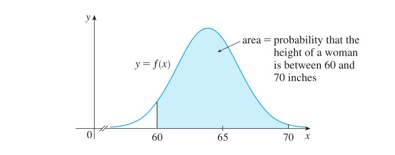
Figure 38: 身高在 [60, 70] 英寸内的女性比例
这个比例也等于 \(\frac{\text{阴影面积}}{\text{总面积}}\), 为 \(\int_{60}^{70} f(x) dx\).
切换空间其实就和切换单位一样, 切换单位后, 函数在定义域上发生改变, 并且函数的定义也要适应定义域的改变而发生改变.
假设这个例子的函数 \(y = f(x)\) 的定义域为 \([50, 80]\), 在把单位从英寸切换成厘米后, 得到定义域为 \([50 * 2.64, 80 * 2.64] = [132, 211.2]\) 的函数 \(g(x^{'})\).
不管是什么单位, 特定身高范围内的女性占比是不会变的, 也就是说 \(\int_{60}^{70} f(x) dx = \int_{60 * 2.64}^{70 * 2.64} g(x^{'}) dx^{'}\).
你也可以这么想, 在一元函数的积分中, \(f(x)dx\) 是一个矩形的面积, 当 \(f(x)\) 转换成 \(g(x^{'})\) 后, 这个矩形的面积和 \(g(x^{'})dx^{'}\) 是一样的,
这两个矩形只是形状发生了改变而已, 面积大小没变.
在二元函数的积分中, \(f(x)dx\) (\(x\) 是二维向量) 就是体积, 也是等同于 \(g(x^{'})dx^{'}\), 就不赘述了.
因此, 我们可以得出这一个关系: \(f(x) dx = g(x^{'}) dx^{'}\).
也就是说, 在 \(x \mapsto x^{'}\) 前提下, 找出 \(f(x)\) 和 \(g(x^{'})\) 之间的关系就可以得到想要的变换了,
比如从 \(f(x)\) 变换到 \(g(x^{'})\) 上: \(f(x) dx = g(x^{'}) dx^{'} \Rightarrow g(x^{'}) = \frac{dx}{dx^{'}} f(x)\), 其中 \(\frac{dx}{dx^{'}}\) 就是从 \(f(x)\) 到 \(g(x^{'})\) 的变换.
同理, 回到 \(P_{22}\) 和 \(P\) 之间的转换, 可以得到这个变换关系 \(\begin{equation*} P_{22}(\widetilde{n}) d\widetilde{n} = P(n) dn \Rightarrow \left\{ \begin{aligned} & P(n) = \frac{d\widetilde{n}}{dn} P_{22}(\widetilde{n}) \\ & P_{22}(\widetilde{n}) = \frac{dn}{d\widetilde{n}}P(n) \end{aligned} \right. \end{equation*}\).
那么现在的关键是如何找出 \(\frac{d\widetilde{n}}{dn}\) 或 \(\frac{dn}{d\widetilde{n}}\) 呢?
\(\frac{d\widetilde{n}}{dn}\) 和 \(\frac{dn}{d\widetilde{n}}\) 刚好又是雅可比行列式(the determinant of Jacobian Matrix), 所以问题就变成了: 如何解出雅可比行列式.
这里先直接给出答案:
从斜率空间到极坐标系的雅可比行列式是 \(\frac{d\widetilde{n}}{dn} = \frac{1}{\cos^{4}\theta}\);
从极坐标系到斜率空间的雅可比行列式是 \(\frac{dn}{d\widetilde{n}} = \cos^{4}\theta\).
在得到雅可比行列式后, 就可以在斜率空间上引入想要的分布函数, 改变其参数并对函数乘以 \(\frac{d\widetilde{n}}{dn}\) 得到在论文中看到的分布函数.
至于雅可比矩阵的计算方法, 就本人所知而言有两种:
首先是 参考文章, 但该解法涉及了微分形式(differential forms)的形式论和几何代数, 本人没这方面的了解;
其次是根据变换关系直接求解, 这里主要介绍这一种方法, 具体思路如下:
首先, 没法直接从 \((x, y, z)\) 和 \((\widetilde{x} = -\frac{x}{z}, \widetilde{y} = -\frac{y}{z})\) 的关系中找到关于从 \(f\) 变换到 \(\widetilde{f}\) 的雅可比矩阵,
因为 \(f\) 和 \(\widetilde{f}\) 的定义是不确定的, 没法直接知道它们之间的关联, 不过它们都可以与极坐标之间进行变换,
所以可以分别找出极坐标到笛卡尔空间的雅可比矩阵 \(J_{f}\) 以到斜率空间的雅可比矩阵 \(J_{\widetilde{f}}\),
最后间接地得出从 \(f\) 到 \(\widetilde{f}\) 之间的雅可比矩阵行列式 \(\frac{|J_{\widetilde{f}}|}{|J_{f}|}\).
需要注意的是, 根据 NDF的定义, 还要分别找出从极坐标到 \(xy\) 平面的投影面积 \(dxdy\) 以及到 \(\widetilde{x} \widetilde{y}\) 平面的投影面积 \(d\widetilde{x} d\widetilde{y}\),
因此, 在计算 \(J_{f}\) 时不需要考虑 \(z\) 轴的变换, 最终得到一个 \(2 \times 2\) 的矩阵;
最后 \(\frac{d\widetilde{x}d\widetilde{y}}{dxdy}\) 就是我们想要的结果. 接下来开始计算.
计算从极坐标系到笛卡尔空间的 \(xy\) 平面投影的面积 \(dxdy\):
\(f(\theta, \phi) = (\sin\theta \cos\phi, \sin\theta \sin\phi, \cos\theta)\)
\(J_{f} = \left( \begin{array}{c} \frac{\partial x}{\partial \theta} & \frac{\partial x}{\partial \phi} \\ \frac{\partial y}{\partial \theta} & \frac{\partial y}{\partial \phi} \end{array} \right) = \left( \begin{array}{c} \cos\theta \cos\phi & -\sin\theta\sin\phi \\ \cos\theta \sin\phi & \sin\theta \cos\phi \end{array} \right)\)
\(|J_{f}| = \frac{\partial x}{\partial \theta} \frac{\partial y}{\partial \phi} - \frac{\partial x}{\partial \phi} \frac{\partial y}{\partial \theta} = \sin\theta\cos\theta \cos^2\phi + \sin\theta \cos\theta \sin^2\phi = \sin\theta \cos\theta\)
\(dx dy = |J_{f}| d\theta d\phi = \sin\theta \cos\theta d\theta d\phi\)
计算从极坐标系到斜率空间投影的面积 \(d\widetilde{x}d\widetilde{y}\):
\(\widetilde{f}(\theta, \phi) = (-\tan\theta \cos\phi, -\tan\theta \sin\phi)\)
\(J_{\widetilde{f}} = \left( \begin{array}{c} \frac{\partial \widetilde{x}}{\partial \theta} & \frac{\partial \widetilde{x}}{\partial \phi} \\ \frac{\partial \widetilde{y}}{\partial \theta} & \frac{\partial \widetilde{y}}{\partial \phi} \end{array} \right) = \left( \begin{array}{c} -\frac{1}{\cos^2 \theta} \cos\phi & \tan\theta \sin\phi \\ -\frac{1}{\cos^2\theta} \sin\phi & -\tan\theta \cos\phi \end{array} \right)\)
\(|J_{\widetilde{f}}| = \frac{\partial \widetilde{x}}{\partial \theta} \frac{\partial \widetilde{y}}{\partial \phi} - \frac{\partial \widetilde{x}}{\partial \phi} \frac{\partial \widetilde{y}}{\partial \theta} = \frac{1}{\cos^2 \theta} \cos^2\phi \tan\theta + \frac{1}{\cos^2 \theta} \sin^2 \phi \tan\theta = \frac{\tan\theta}{\cos^2\theta}\)
\(d\widetilde{x} d\widetilde{y} = |J_{\widetilde{f}}| d\theta d\phi = \frac{\tan\theta}{\cos^2\theta} d\theta d\phi\)
最后计算最终结果:
\(\frac{d\widetilde{x} d\widetilde{y}}{dx dy} = \frac{|J_{f}|}{|J_{\widetilde{f}}|} = \frac{\tan\theta}{\sin\theta\cos^3 \theta} = \frac{1}{\cos^4\theta}\)
4.1.4. 从斜率空间上的正态分布函数到 NDF
比如把二元正态分布函数引入斜率空间得到: \(D(\widetilde{m}, \sigma) = \frac{1}{2 \pi \sigma^{2}} \times e^{-\frac{|\widetilde{m}|^{2}}{2 \sigma^{2}}}\),
让 \(D(\widetilde{m}, \sigma)\) 乘以 \(\frac{1}{\cos^{4}\theta}\) 就可以得到 NDF: \(D(m = (\theta, \phi), \sigma) = \frac{1}{\cos^{4}\theta}D(\widetilde{m}, \sigma) = \frac{1}{2 \pi \sigma^{2} \cos^{4}\theta} \times e^{-\frac{\tan^{2}\theta}{2 \sigma^{2}}}\).
这个 NDF 就是各向同性的 Beckmann Distribution.
\(\sigma\) 就是粗糙度, 但也有文献上用 \(\alpha\) 来替代, 看到它们其中任意一个要意识到实际上是一个东西.
你可能在其它文献中看到的 NDF 这么写: \(D(m, \alpha) = \frac{1}{\pi \alpha^{2} \cos^{4}\theta} \times e^{-\frac{\tan^{2}\theta}{\alpha^{2}}}\), 这是因为令 \(\alpha = \sqrt{2}\sigma\).
另外, 斜率空间本身就限制了 \(m\) 不可能超出上半球范围, 但是笛卡尔坐标或者极坐标并没有该限制, 所以我们需要注意 \(\theta\) 的范围:
\(\theta \in [-\frac{\pi}{2}, \frac{\pi}{2}]\), 范围外的统一不进行计算.
所以 NDF 的完整定义是: \(D(m = (\theta, \phi), \sigma) = \frac{\chi^{+}(\cos\theta)}{2 \pi \sigma^{2} \cos^{4}\theta} \times e^{-\frac{\tan^{2}\theta}{2 \sigma^{2}}}\), 其中 \(\begin{equation*}\chi^{+}(x) = \begin{cases} 1, & x \gt 0 \\ 0, & x \le 0 \end{cases}\end{equation*}\).
通过观察可以看到 \(D(m, \alpha)\) 的定义和 \(m\) 的 \(\phi\) 没有任何关系, 而 \(\theta\) 又刚好是微平面面法线 \(m\) 和宏表面法线 \(n\) 的夹角, 所以 \(D(m, \alpha)\) 又有另外两种写法:
- \(D(\theta, \alpha) = \frac{\chi^{+}(\cos\theta)}{\pi \alpha^{2} \cos^{4}\theta} \times e^{-\frac{\tan^{2}\theta}{\alpha^{2}}}\)
- \(D(m = (x_{0}, y_{0}, z_{0}), n = (x_{1}, y_{1}, z_{1}), \alpha) = \frac{\chi^{+}(m \cdot n)}{\pi \alpha^{2} (m \cdot n)^{4}} \times e^{\frac{(m \cdot n)^2 - 1}{\alpha^{2} (m \cdot n)^{2}}}\)
4.1.5. 从斜率空间上的 T 分布函数到 NDF
把二元T分布函数引入斜率空间得到: \(D(\widetilde{m}, \sigma) = \frac{\sigma^{2}}{\pi (\sigma^{2} + |\widetilde{m}|^{2})^{2}}\),
同样乘以 \(\frac{1}{\cos^{4}\theta}\) 得到 NDF: \(D(m = (\theta, \phi), \sigma) = \frac{\sigma^{2}}{\pi \cos^{4}\theta (\sigma^{2} + \tan^{2}\theta)^{2}}\).
再限制一下 \(\theta\) 的范围: \(D(m, \sigma) = \frac{\sigma^{2}\chi^{+}(\cos\theta)}{\pi \cos^{4}\theta (\sigma^{2} + \tan^{2}\theta)^{2}}\).
这个 NDF 就是各向同性的 GGX (Trowbridge-Reitz) Distribution.
另外, 有些文档会用下面的形式来表示 GGX Distribution:
\(\begin{equation*} \begin{aligned} D(m = (\theta, \phi), \sigma) &= \frac{\sigma^{2}\chi^{+}(\cos\theta)}{\pi \cos^{4}\theta (\sigma^{2} + \tan^{2}\theta)^{2}} \\ &= \frac{\sigma^{2}\chi^{+}(\cos\theta)}{\pi ((\cos^{2}\theta) \sigma^{2} + \sin^{2}\theta)^{2}} \\ &= \frac{\sigma^{2}\chi^{+}(\cos\theta)}{\pi ((\cos^{2}\theta) \sigma^{2} + (1 - \cos^{2}\theta))^{2}} \\ &= \frac{\sigma^{2}\chi^{+}(\cos\theta)}{\pi ((\cos^{2}\theta)(\sigma^{2} - 1) + 1)^{2}} \end{aligned} \end{equation*}\)
\(D(m, \sigma)\) 同样和 \(m\) 的 \(\phi\) 没有任何关系, 所以类似前面的 Beckmann Distribution 一样可以改写成另外两种表示:
- \(D(\theta, \sigma) = \frac{\sigma^{2}\chi^{+}(\cos\theta)}{\pi \cos^{4}\theta (\sigma^{2} + \tan^{2}\theta)^{2}}\)
- \(D(m = (x_{0}, y_{0}, z_{0}), n = (x_{1}, y_{1}, z_{1}), \sigma) = \frac{\sigma^{2} \chi^{+}(m \cdot n)}{\pi (m \cdot n)^{4} (\sigma^{2} - \frac{(m \cdot n)^{2} - 1}{(m \cdot n)^{2}})^{2}} = \frac{\sigma^{2}\chi^{+}(m \cdot n)}{\pi ((m \cdot n)^{2}(\sigma^{2} - 1) + 1)^{2}}\)
4.2. 各向同性 NDF 的几何函数 \(G_{1}\) 推导
整理自 "Microfacet Models for Refraction through Rough Surfaces"

Figure 39: G1
这张图片直观地展示了射线, 法线, 和表面之间的几何关系, 看懂这种图是理解推导的关键.
几何函数的定义是依赖于 NDF 的, 所以需要从 NDF 下手, 特别是要把 NDF 变换到斜率空间上 \(P_{22}\).
以下是对图片内容的一些补充.
\(P_{22}(\widetilde{m} = (\widetilde{x}, \widetilde{y}))\), 令 \(p = \widetilde{x}\) 和 \(q = \widetilde{y}\).
\(P_{1}(\xi)\): 微平面高度为 \(\xi\) 时的概率密度.
\(P_{2}(q)\): 微平面斜率为 \(q\) 时的概率密度, 其定义为 \(P_{2}(q) = \int_{-\infty}^{\infty}P_{22}(p, q)dp\), 是边缘分布.
因为 \(P_{22}(p, q)\) 是由各向同性
NDF变换来的, 所以 \(P_{2}(q) = P_{2}(p) = \int_{-\infty}^{\infty}P_{22}(p, q)dq\).在讨论微平面斜率的分布时, 只选其中之一即可.
\(\xi\) 和 \(q\): 分别是表面在 \(\tau\) 处的高度和斜率;
\(S(\xi_{0}, \mu)\): 位于表面高度 \(\xi_{0}\) 的点在射线 \(v\) 上可见的概率, \(\mu\) 是射线 \(v\) 的斜率, \(\mu = |\tan(\frac{\pi}{2} - \theta_{v})| = |-\cot\theta_{v}| = |\frac{\cos\theta_{v}}{\sin\theta_{v}}| = |\frac{n \cdot v}{\sqrt{1 - (n \cdot v)^2}}|\);
\(\xi_{0} + \mu \tau\): 射线 \(v\) 在 \(\tau\) 上的高度;
\(g(\tau)\Delta \tau\): 当射线 \(v\) 在区间 \([\tau, \tau + \Delta \tau]\) 上与平面发生第一次相交时, 位于表面下的射线长度,
这里先把 \(g(\tau) \Delta \tau\) 看作一个整体, 稍后会对 \(g(\tau)\) 进行解释.
最终 \(S(\xi_{0}, \mu)\) 的定义为 \(S(\xi_{0}, \mu) = e^{-\int_{0}^{\infty}g(\tau)d\tau}\), 其中 \(g(\tau)d\tau\) 作为衰减系数.
根据描述可以发现 \(S(\xi_{0}, \mu)\) 的作用非常接近几何函数, 事实上的确如此, 可以说两者就差一步.
为了定义 \(g\), 要先假设表面斜率分布和高度两者是不相关的(法线/遮蔽独立, normal/masking independence), \(g\) 的行为概括为:
当射线与表面相交时, 有多少比例的射线位于表面的下方.
观察推导图, 在 \(\tau\) 处 \(\xi_{0} + \mu\tau \gt \xi\), 射线并未与表面相交; 在 \(\tau + \Delta \tau\) 处 \((q - \mu)\Delta \tau \gt (\xi_{0} + \mu\tau) - \xi\), 射线与表面发生相交.
把射线在表面之下的条件改成这样更易理解: \(\xi + q\Delta \tau \gt \xi_{0} + \mu\tau + \mu\Delta\tau\).
因此, \(g(\tau) = \frac{\int_{\mu}^{\infty}(q - \mu)P_{1}(\xi_{0} + \mu\tau)P_{2}(q)dq}{\int_{-\infty}^{\xi_{0} + \mu\tau}P_{1}(\xi)d\xi}\), 回到 \(S(\xi_{0}, \mu)\) 的定义上 \(S(\xi_{0}, \mu) = e^{-\int_{0}^{\infty} g(\tau) d\tau} = e^{\Lambda(\mu) \ln f(\xi_{0})} = f(\xi_{0})^{\Lambda(\mu)}\),
其中 \(f(\xi_0) = \int_{-\infty}^{\xi_0}P_1(\xi)d\xi\), 表示微平面高度小于等于 \(\xi_0\) 的概率.
由于 \(g(\tau)\) 的分子是关于 \(q\) 积分的, \(P_1(\xi_0 + \mu \tau)\) 和 \(q\) 无关, 可得:
\(\int_{\mu}^{\infty}(q - \mu)P_{1}(\xi_{0} + \mu\tau)P_{2}(q)dq = P_{1}(\xi_{0} + \mu\tau) \int_{\mu}^{\infty}(q - \mu)P_{2}(q)dq\).
令 \(q\) 是随机变量 \(Q\) 支撑集里面的元素, 根据无意识统计学家定理(
LOTUS), 可以发现 \(\int_{\mu}^{\infty}(q - \mu)P_{2}(q)dq\) 是一个期望,其中 \(z(q) = q - \mu\), 所以该等式的含义是在 \(q \ge \mu\) 时随机变量 \(z(Q)\) 的期望,
另外根据概率和期望之间的桥梁: 假设 \(A\) 是事件, \(I_A\) 是事件 \(A\) 的指示随机变量, 那么 \(P(A) = E(I_A)\).
所以分子 \(P_{1}(\xi_{0} + \mu\tau) \int_{\mu}^{\infty}(q - \mu)P_{2}(q)dq\) 的完整含义是射线高度为 \(\xi_0 + \mu\) 且微平面的斜率 \(q\) 大于射线 \(\mu\) 的概率.
另外根据微积分基础定理可得知 \(\mu P_{1}(\xi_{0} + \mu \tau)\) 是分母 \(\int_{-\infty}^{\xi_{0} + \mu\tau}P_{1}(\xi)d\xi\) 关于 \(\tau\) 的导数.
令分母为 \(f(\xi_{0} + \mu\tau) = \int_{-\infty}^{\xi_{0} + \mu\tau}P_{1}(\xi)d\xi\), \(f(\xi_{0} + \mu\tau)\) 表示微平面高度小于等于射线高度 \(\xi_{0} + \mu\tau\) 的概率.
分母是用来对分子进行归一化, 使得 \(g(\tau)\) 限定在一个合理范围内.
因为函数 \(P_1\) 是概率密度函数, 所以它的反导函数 \(f\) 是累积分布函数.
使用链式法则对 \(f(\xi_{0} + \mu \tau)\) 关于 \(\tau\) 求导就可以得出 \(\mu P_{1}(\xi_{0} + \mu \tau)\).
所以 \(g(\tau)\) 可以改为以斜率 \(\mu\) 的函数: \(h(\mu) = \frac{\mu P_{1}(\xi_{0} + \mu \tau) \frac{1}{\mu} \int_{\mu}^{\infty}(q - \mu)P_{2}(q)dq}{f(\xi_{0} + \mu \tau)}\).
令 \(\Lambda(\mu) = \frac{1}{\mu} \int_{\mu}^{\infty}(q - \mu)P_{2}(q)dq\), 最后 \(h(\mu) = \Lambda(\mu) \frac{\mu P_{1}(\xi_{0} + \mu \tau)}{f(\xi_{0} + \mu \tau)} = g(\tau)\).
对于形式如 \(\int_{a}^{b} \frac{f^{'}(x)}{f(x)} dx\) 的积分, 采用换元积分法令 \(F = f(x)\) 以及 \(dF = f^{'}(x)dx\) 得到 \(\int_{f(a)}^{f(b)} \frac{1}{F} dF\).
根据微积分基本定理可得 \(\int_{f(a)}^{f(b)} \frac{1}{F}dF = \left. \ln F \right]_{f(a)}^{f(b)} = \left. \ln f(x) \right]_{f(a)}^{f(b)}\).
采用换元法令 \(z = \xi_0 + \mu \tau\), \(d z = \mu d \tau\),
可得 \(\int_{0}^{\infty} g(\tau) d\tau = \int_{0}^{\infty} h(\mu) d\tau = \Lambda(\mu) \int_{0}^{\infty} \frac{\mu P_{1}(\xi_{0} + \mu \tau)}{f(\xi_{0} + \mu \tau)} d\tau = \Lambda (\mu) \int_{\xi_0}^{\xi_0 + \mu \infty} \frac{P_{1}(z)}{f(z)} dz\).
因为 \(f^{'}(z) = P_{1}(z)\), 所以 \(\Lambda (\mu) \int_{\xi_0}^{\xi_0 + \mu \infty} \frac{P_{1}(z)}{f(z)} dz = \Lambda (\mu) \int_{\xi_0}^{\xi_0 + \mu \infty} \frac{P_{1}(z)}{f(z)} dz = \Lambda (\mu) \left. \ln f(z) \right]_{\xi_0}^{\xi_0 + \mu \infty}\).
又因为 \(f\) 是累积分布函数, 所以 \(f(\xi_0 + \mu \infty) = 1 \Rightarrow \ln f(\xi_0 + \mu \infty) = 0\), 可得 \(\Lambda (\mu) \left. \ln f(z) \right]_{\xi_0}^{\xi_0 + \mu \infty} = - \Lambda(\mu) \ln f(\xi_0)\).
最后得出 \(S(\xi_0, \mu) = f(\xi_0)^{\Lambda (\mu)}\).
再对所有 \(\xi_{0}\) 为起始的表面高度进行积分, 找出点在射线 \(v\) 上的平均可见性(期望) \(S_{1}(\mu) = \int_{-\infty}^{\infty}S(\xi_{0}, \mu)P_{1}(\xi_{0})d\xi_{0} = \frac{1}{1 + \Lambda(\mu)}\).
前面得知 \(S(\xi_0, \mu) = f(\xi_0)^{\Lambda (\mu)}\), 其中 \(P_{1}(\xi_0)\) 是 \(f(\xi_0)\) 关于 \(\xi_0\) 的导数: \(f^{'}(\xi_0) = P_1(\xi_0)\),
采用换元法令 \(t = f(\xi_0)\), \(dt = P_{1}(\xi_0) d\xi_0 = df(\xi_0)\), 可得 \(S_{1}(\mu) = \int_{f(-\infty)}^{f(\infty)} f(\xi_0)^{\Lambda(\mu)} df(\xi_0) = \int_{f(-\infty)}^{f(\infty)} t^{\Lambda (\mu)} dt\).
根据微积分基本定理可以得出 \(S_{1}(\mu) = \left. \frac{1}{1 + \Lambda(\mu)} t^{1 + \Lambda(\mu)} \right]_{f(-\infty)}^{f(\infty)} = \frac{1}{1 + \Lambda(\mu)} ( f(\infty)^{1 + \Lambda(\mu)} - f(-\infty)^{1 + \Lambda(\mu)})\).
因为函数 \(f\) 是累积分布函数, 所以 \(\begin{equation*} \left\{ \begin{aligned} & f(\infty)^{1 + \Lambda(\mu)} = 1 \\ & f(-\infty)^{1 + \Lambda(\mu)} = 0 \end{aligned} \right. \end{equation*}\), 最终 \(S_{1}(\mu) = \frac{1}{1 + \Lambda(\mu)}\).
为了确保物理计算的正确性, 还要保证 方向一致性 (sideness agreement): 确保射线位于宏表面和微表面的同一侧.
做法很简单, 设 \(m\) 和 \(n\) 分别为微平面和宏平面的法线, 射线为 \(v\), 只要 \(v \cdot m\) 和 \(v \cdot n\) 两者正负相同即可, 也就是 \(\frac{v \cdot m}{v \cdot n} \gt 0\) 或 \((v \cdot m)(v \cdot n) \gt 0\) 即表示 \(v\) 在 \(m\) 和 \(n\) 的同一侧. 方向一致性也因此被称为同向可见性.
经过方向一致性的约束就可以得到几何函数了: \(G_1(v, m) = \chi^{+}(\frac{v \cdot m}{v \cdot n})S_1(\mu) = \chi^{+}(\frac{v \cdot m}{v \cdot n})\frac{1}{1 + \Lambda(\mu)}\), 其中 \(\begin{equation*}\chi^{+}(x) = \begin{cases} 1, & x \gt 0 \\ 0, & x \le 0 \end{cases}\end{equation*}\).
5. 完结心声
这篇笔记完结于 2025-02-18 的凌晨, 这部分内容也是这时候写下的.
完结是指内容在框架上已定型, 日后还会有不定期的小修补.
我写了很多篇和图形相关的笔记, 只有这一篇写了完结心声, 因为这对于我来说是一个阶段性的胜利.
PBR 是我在 2021 年就注意到的话题, 忘记具体几月份了, 大约是四月份左右, 是从 LearnOpenGL 了解到的, 但没意识到它的重要性.
在真的去接触工程后就发现 Albedo, Metallic, Roughness, AO 等等这都是些啥呀, 和 Blinn-Phong 差太远了吧.
没错, 实际工程中都是采用 PBR 的, 不学的话怎么做游戏呢?
如果你看过我其它的笔记, 会发现我都是尽可能地把公式的推导给还原出来的, 因为 Shader 中是要用到这些推导的.
我知道可能有人会说: 为什么要去还原公式的推导过程, 不是直接用就好了吗?
其实我一开始也是这么想的, 那时我打算直接跟着
LearnOpenGL去抄代码进行学习,我相信很多程序员学新语言/新框架时都会通过抄代码去学习, 但要建立在理解代码的前提下.
同理, 还原公式的推导就是在理解, 只不过从理解代码变成要理解数学知识而已.
但 PBR 的公式推导需要相当的数学知识, 即便是阅读参考资料的也需要相当的数学知识, 加上当时刚换了一份比较忙的工作, 时间碎片化严重并且精力不足,
而数学和图形学的内容又非常需要连续的长时间去投入精力学习, 所以就暂时搁置 PBR 的学习计划了.
在 2021 年到 2023 年底这段时间里面, 我是想学又学不了, 想玩游戏但又自责在浪费学习时间, 那段时间我买了不少游戏但还没通关, 甚至是还没打开过, 这种思想上长期的分裂导致我精神和身体都出现了问题.
别以为我不喜欢玩游戏, 正是因为小时候玩游戏才想着长大后有属于自己的游戏, 才有现在的的学习游戏开发.
在 2024 年处公司缩编裁员后, 我花了 8 个月时间折腾完一些事情, 然后就开始学习游戏开发技术了.
做一个独立游戏开发者是我在 2019 年底就开始定下的目标, 但对于很多人来说自学数学都不是一项小工程, 其中也包括我, 怀疑自己到底可不可以完成次壮举?
不过没关系, 人生这么长, 有机会让你实现一些壮举.
后来自学线性代数的经历打消了我的疑虑, 再后来的写下自己 OpenGL 渲染管线笔记更是让我信心大增, 自此, 我坚定地开始了我的成为独立游戏开发者之旅.
这就是为什么不学习会焦虑, 补充数学知识, 还要理解 PBR 里面的公式推导, 这是另外一个大工程, 这项工程的延期会让我卡在能开发游戏的前一步中.
在 2024 年 8 月中, 我曾经尝试在不掌握这些知识的前提下去学习 Godot 引擎的使用, 想着边干边学,
但同年 10 月学习 Godot Shader 中一个经历改变了我的想法:
在通过 depth buffer 实现迷雾效果时, 发现相同的代码在视频中和我现实中的效果不一样, 经过一番检查和搜索后找到了问题,
我的项目是使用 OpenGL 渲染的, 视频的是使用的图形 API 是 Vulkan, 它的 depth buffer 不一样的, 所以它的深度值线性化和 OpenGL 的是不一样的,
因此问题变成了如何对 OpenGL 的透视投影 depth buffer 的深度值进行线性化, 解决方法来源于对 OpenGL 的渲染管线中透视投影的进一步推导,
这一块恰好是之前落下的内容, 所以解决这个问题花了不少时间去推导, 花了大概三天吧, 开始时有一部分时间花在搜索现成答案上, 然而戏剧的部分要来了:
在一开始我其实就浏览到答案了, 但当时不知道它是解决方法, 这是在推导完成后才发现.
幸运的是这次的问题不算复杂, 所以只花了三天时间, 那么下一次呢? 不幸的是一开始就与解决方法擦肩而过.
不管从哪个方面来说, 提前掌握需要的知识都可以加快问题的解决效率, 这里有足以可以反驳什么事情都可以边干边学的观点.
只要是真心想做游戏, 那么这些知识是必定会用得上的, 早晚的问题而已, 所以暂停了 Godot 的学习去把 PBR 补上.
PBR 的内容需要微积分和概率论作为前提, 这两者花了两个月左右, PBR 本身则是花了一个多月的时间.
线性代数和渲染管线我虽不说学得好, 但到达看懂资料的程度也不过是前后花了一个多月, 而且还是每天下班后只花 2 到 3 个小时来学的,
换作每天 8 小时的上班时间来说, 也只不过是上了半个月左右的班而已, 但学习微积分 / 概率论 / PBR 是实打实地上了三个月班, 而且每天还要熬夜加班, 换做每天花 2 到 3 个小时去学习, 则是要八个月.
到了这一步再从 LearnOpenGL 的目录看去, 比较基础和难的内容就这一些了, 剩下的都是可以边干边学的知识, 也能够覆盖基本的游戏开发了, 所以该回去 Godot 上学习游戏开发了.
从开始的恶补数学到现在的推导出大部分公式, 真正花费的其实半年都不到, 但整个学习过程因为其它事情横跨了 4 年多 (2019 年底 - 2025 年初), 回头望去满是感慨: 不也能做得到吗?
当然图形学是个无底洞, 之后会作为爱好去发展(特别是阅读 SIGGRAPH 论文); 数学作为解决问题的重要工具, 以后也会日常做两到题形成条件反射;
最重要的是, 我的成为独立游戏开发者之旅结束了, 游戏开发之旅开始, 我现在是个 Level one 的游戏开发者, 那种熬夜去补知识的日子过去了, 也不用因为玩一会游戏而感到自责, 思想上的分裂不复存在.
最后, 这里要特别感谢毛星云前辈, 在我的成为独立游戏开发者之旅中, 前辈的 "PBR 白皮书" 系列给我提供了明确的学习方向, 这个系列早在 2021 年时就被我收藏了, 可惜前辈在 2021 年 12 月 11 日因抑郁跳楼结束自己生命.
前辈的资料是我主要的参考资料, 没有毛星云前辈的整理, 我现在都不知道要读哪些论文/书籍, 不知道重点学习什么, 不知猴年马月才能完成这篇笔记.
在此, 缅怀毛星云前辈, 感谢前辈帮助了千千万万个像我这样的追梦者.